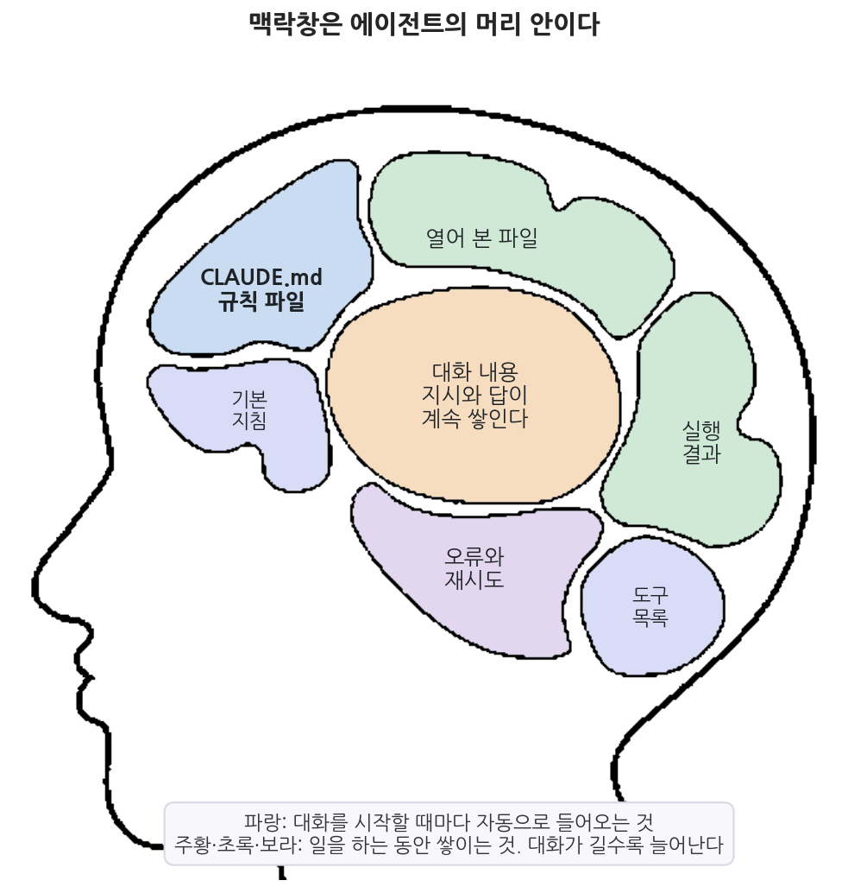
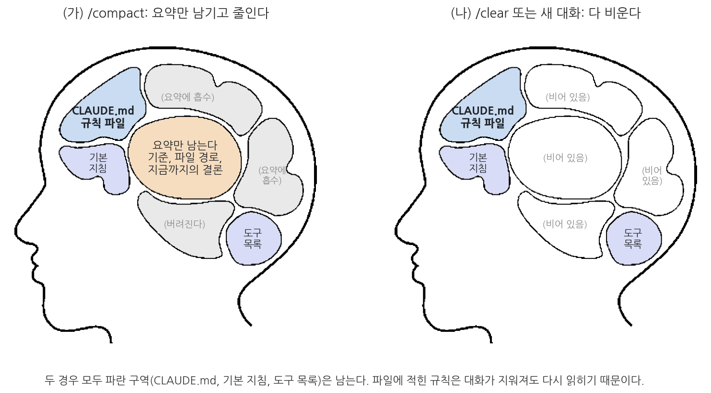
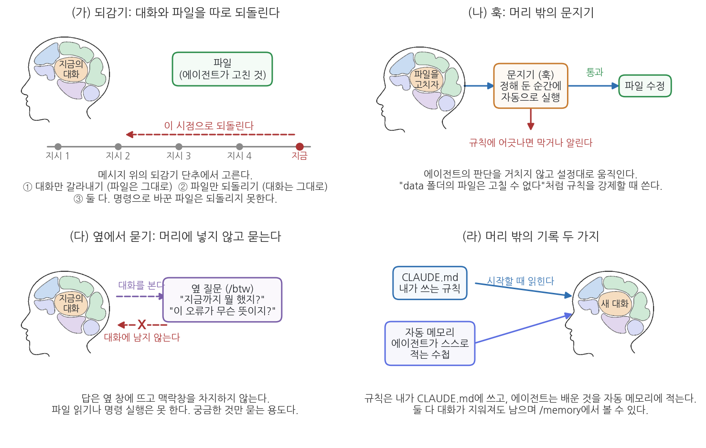
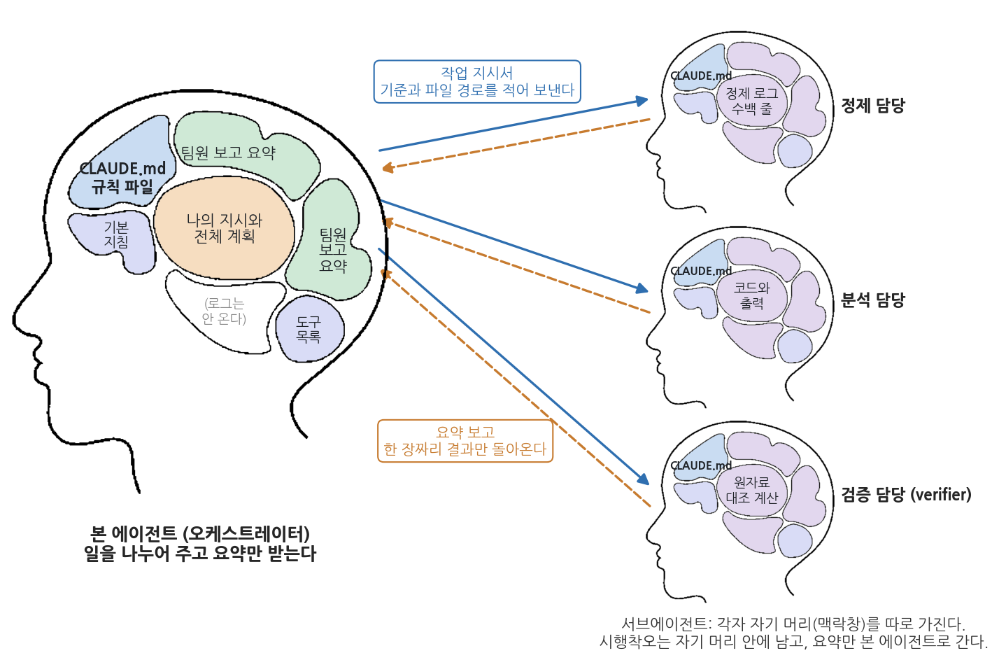
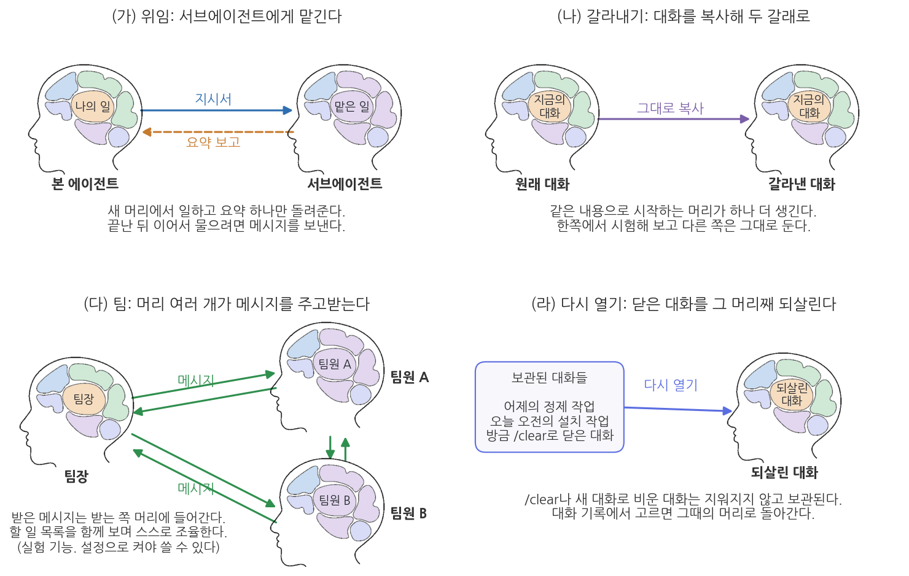

특강. 에이전트의 머리: 맥락창 이해와 관리
최종 수정: 2026-09-08
이 특강에서 배우는 것
오후 두 시, 인구 데이터를 정제하기 시작한 지 한 시간이 지났다. 그동안 에이전트와 대화하며 결측값을 어떻게 다룰지, 시군구 이름을 어떤 표기로 통일할지, 표의 숫자를 몇 자리까지 반올림할지를 하나씩 정했다. 정한 것이 여섯 가지쯤 된다. 처음 30분은 순조로웠다. 새 표를 만들 때마다 에이전트는 정한 기준을 그대로 지켰고, 그래서 안심하고 다음 일을 시켰다. 그런데 어느 순간부터 결과가 조금씩 어긋나기 시작한다. 결측을 제외하기로 했는데 0으로 채운 표가 나오고, 지적하면 사과하고 고친다. 10분 뒤에는 반올림 자리가 달라진 표가 나온다. 또 지적하면 또 고친다. 이쯤 되면 이런 생각이 든다. 아까는 잘하더니 왜 갑자기 이러는가.
이것은 성의의 문제가 아니라 머리의 문제다. 에이전트가 답을 만들 때 참고할 수 있는 것은 지금 자기 머리 안에 들어 있는 내용뿐인데, 그 머리에는 크기가 정해져 있다. 한 시간 동안 오간 지시와 답, 열어 본 파일의 내용, 코드를 돌린 출력, 오류가 나서 다시 시도한 기록이 차곡차곡 쌓이면 머리는 반드시 찬다. 그리고 머리가 차면 오래된 것부터 요약되어 자리를 내준다. 한 시간 전에 정한 "결측은 제외한다"는 기준이 바로 그 오래된 것에 속한다. 규칙이 사라진 줄 나도 모르고 에이전트도 모르는 상태로 작업이 계속되는 것, 이것이 긴 작업에서 결과가 슬금슬금 어긋나는 가장 흔한 이유다.
이 특강은 「AI 기반 공공데이터 분석」 교재의 맥락창 관련 내용을 한 주로 묶은 것이며, 이론과 실습을 한 장에 이어서 담았다. 1부(이론)에서는 에이전트의 머리 안이 어떻게 생겼는지, 머리가 찼을 때 무엇을 할 수 있는지, 머리 밖에 무엇을 둘 수 있는지를 그림과 표로 익힌다. 2부(실습)에서는 실제로 머리를 채우고, 얼마나 찼는지 확인하고, 줄이고, 비우고, 되감아 보면서 1부에서 배운 것이 화면에서 어떻게 나타나는지 확인한다. 프로그래밍 지식은 필요하지 않다. 필요한 것은 VSCode에 설치된 Claude Code 확장과 그 채팅창뿐이다.
이 특강에서는 다음을 이해한다.
- 맥락창이 무엇이고, 왜 에이전트에게는 장기 기억이 없는지
- 머리가 차는 속도를 정하는 것이 대화의 길이만이 아니라는 것
- 머리가 찼을 때 하는 일 네 가지: 비우기, 줄이기, 머리 밖에 적기, 머리 늘리기
/compact와/clear가 각각 무엇을 남기고 무엇을 지우는지- CLAUDE.md와 자동 메모리가 대화를 비워도 남는 이유, 그리고 훅이 그 둘과 다른 이유
- 서브에이전트가 왜 우리 대화를 모르는지, 그래서 지시서에 무엇을 적어야 하는지
- 되감기(체크포인트)의 세 갈래와 되돌릴 수 없는 것
- 옆에서 묻기(
/btw)가 보통의 질문과 다른 점 - VSCode 확장에서 쓸 수 있는 기능의 전체 지도
2부 실습이 끝나면 다음이 남는다.
- 프로젝트 폴더 맨 위의
CLAUDE.md(다섯 줄로 시작해, 실습 중에 한 줄이 더 붙는다) 산출물/인구밀도_상위5.csv(인구밀도 상위 5개 시군구 표)메모/오늘의_메모.md(되감기 실험에 쓰고, 실험이 끝나면 이전 내용으로 돌아가 있다)- data 폴더의 파일 수정을 막는 훅 하나 (프로젝트 설정에 들어간다)
- 빈 머리와 찬 머리를
/context로 견주어 본 경험 - 압축 전후에 같은 질문을 던져, 결론은 남고 세부는 사라지는 것을 확인한 경험
- 새 대화가 대화 안의 결정은 모르지만 CLAUDE.md의 규칙은 아는 것을 확인한 경험
- 에이전트가 요약 뒤에, 그리고 새 대화에서 아는 척하는 장면을 잡아내고 바로잡은 경험
이 특강은 하나의 비유를 끝까지 밀고 간다. "에이전트의 머리 안에는 무엇이 들어 있고, 그 머리가 찼을 때 나는 무엇을 할 수 있는가?" 1부에서 원리를 그림으로 익히고, 2부에서 같은 그림을 화면에서 확인한다.
1부 이론. 1.1 머리 안을 들여다본다 (맥락창, 자동 압축, 사용량 보기) → 1.2 머리가 찼을 때 하는 일 네 가지 (비우기, 줄이기, 적어 두기, 늘리기) → 1.3 머리 밖의 기록과 문지기 (CLAUDE.md, 자동 메모리, 훅) → 1.4 머리를 여러 개 쓰기 (오케스트레이터와 서브에이전트, 갈라내기·팀·다시 열기) → 1.5 되돌리기와 옆에서 묻기 (되감기,
/btw) →
1.6 VSCode 확장 기능 지도.2부 실습. 2.1 빈 머리 보기 → 2.2 머리 채우기 → 2.3 시금석 심기 → 2.4
/compact로 줄이기 →
2.5 옆에서 묻기 →
2.6 새 대화로 비우기와 CLAUDE.md →
2.7 되감기 →
2.8 /memory와 훅 →
2.9 선택 심화: 서브에이전트.
준비물
| 구분 | 내용 |
|---|---|
| 폴더 | 공공데이터분석 폴더 (하위에 data, 산출물, 메모 폴더가 있어야 한다. VSCode에서 이 폴더를 열어 둘 것) |
| 데이터 | data/sigungu_2023.csv. 2023년 전국 229개 시군구의 인구 지표 12개 열(시도, 시군구, 총인구, 면적, 인구밀도, 인구증가율, 고령, 생산가능, 유소년, 고령인구비율, 합계출산율, 출생아수). 출처는 행정안전부 주민등록인구통계와 국가데이터처(옛 통계청) 인구동향조사이며 KOSIS에서 수집했다. 1번째 줄이 열 이름, 2번째 줄부터 데이터이고 마지막 줄 번호가 230이다 |
| 도구 | VSCode + Claude Code 확장 (유료 구독 상태로 로그인되어 있을 것) |
| 선수 내용 | 1부 이론 전체 (1.1 맥락창은 머리 안, 1.2 네 가지 방법, 1.3 CLAUDE.md와 자동 메모리와 훅, 1.4 오케스트레이터와 서브에이전트, 1.5 되감기와 /btw, 1.6 기능 지도). 그림 특-1부터 특-5까지를 옆에 펴 두고 실습하면 좋다 |
줄 번호는 이 실습 내내 VSCode에서 파일을 열었을 때의 번호로 세고, 열 이름 줄을 1번째 줄로 센다. 파일의 특정 줄로 갈 때는 Ctrl+G를 눌러 번호를 입력한다. 이 규칙을 처음에 못 박아 두는 이유는, 에이전트가 데이터 줄만 0부터 세는 일이 흔해서 같은 값을 두고 줄 번호가 어긋나기 때문이다.
1부. 이론: 머리 안을 이해한다
1부는 여섯 절이다. 머리 안을 들여다보는 데서 시작해(1.1) 머리가 찼을 때의 네 방법(1.2), 머리 밖의 기록과 문지기(1.3), 머리 여러 개(1.4), 되돌리기와 옆에서 묻기(1.5)를 거쳐 기능 지도(1.6)로 끝난다. 그림 다섯 장과 표 두 개가 이 순서를 따른다.
1.1 맥락창은 에이전트의 머리 안이다
에이전트가 답을 만들 때 참고할 수 있는 것은 지금 맥락창에 들어 있는 내용이 전부다. 사람과 대화가 길어지면 상대가 나를 알아 가듯이 에이전트도 나를 알아 갈 것 같지만, 실제 구조는 그렇지 않다. 에이전트의 심장에 있는 언어모델에는 사람의 장기 기억에 해당하는 것이 없다. 어제 두 시간 동안 함께 인구 데이터를 분석했더라도, 오늘 새 대화를 열고 "어제 만든 그래프를 조금 수정해 줘"라고 하면 에이전트는 무슨 말인지 알지 못한다. 어제의 대화가 오늘의 맥락창 안에 없기 때문이다. 이것은 에이전트가 게을러서가 아니라 구조가 그렇게 되어 있어서 생기는 일이다.
맥락창(context window)은 에이전트가 답을 만들 때 참고할 수 있는 내용이 담기는 한정된 공간이다. 지금까지의 대화, 에이전트가 열어 본 파일의 내용, 코드를 실행한 결과, 규칙 파일 CLAUDE.md가 모두 이 안에 들어가야 하며, 맥락창 밖의 정보는 에이전트에게 존재하지 않는 것과 같다. 크기가 정해져 있어서 긴 작업에서는 반드시 차는 순간이 온다.
책상 비유가 "보이는 범위"를 설명한다면, 머리 비유는 "차고 비는 과정"을 설명한다. 사람이 회의 중에 들은 말, 펼쳐 본 서류, 계산해 본 숫자를 머릿속에 담아 두고 일하듯, 에이전트도 지금까지의 대화와 열어 본 파일과 실행 결과를 맥락창이라는 머리 안에 담아 두고 일한다. 그림 특-1은 그 머리 안을 구역으로 나누어 그린 것이다.

그림 특-1을 읽어 보자. 파란 구역 세 개는 대화를 시작하는 순간 자동으로 들어오는 것이다. 에이전트가 따라야 할 기본 지침, 쓸 수 있는 도구의 목록, 그리고 1.3절에서 배울 규칙 파일 CLAUDE.md다. 여러분이 아무 말도 하지 않은 새 대화의 머리도 이 세 구역만큼은 이미 차 있다. 나머지 구역은 일을 하는 동안 쌓이는 것이다. 주황색의 대화 내용은 여러분의 지시와 에이전트의 답이 오간 만큼 늘어나고, 초록색의 열어 본 파일과 실행 결과는 에이전트가 도구를 쓸 때마다 늘어나며, 보라색의 오류와 재시도는 일이 잘 안 풀릴수록 늘어난다.
여기서 알 수 있는 것은 머리가 차는 속도를 정하는 것이 대화의 길이만이 아니라는 점이다. 230줄짜리 파일 하나를 읽히는 것과 수만 줄짜리 파일을 통째로 읽히는 것은 머리를 차지하는 양이 전혀 다르고, 코드가 한 번에 돌아가는 것과 오류를 세 번 고치는 것도 다르다. 지시를 다섯 번밖에 하지 않았어도 그 사이에 큰 파일을 여러 개 읽히고 설치 명령을 여러 번 돌렸다면 머리는 이미 상당히 차 있을 수 있다. 반대로 짧은 질문과 짧은 답만 오간 대화는 스무 번을 주고받아도 여유가 있다. 그래서 "대화가 몇 번 오갔는가"보다 "무엇을 읽히고 무엇을 돌렸는가"를 보는 편이 실제에 가깝다.
머리의 크기는 정해져 있다. 그래서 긴 작업에서는 반드시 머리가 차는 순간이 온다. 이때 Claude Code는 오래된 내용부터 요약해 자리를 만드는데, 이것을 자동 압축이라 부른다. 편리한 장치이지만 무엇을 요약해 버릴지를 내가 정하지 않았다는 문제가 있다. 한 시간 전에 정한 "결측은 제외하고 평균을 낸다"는 기준이 요약에서 빠졌는데 나도 에이전트도 그 사실을 모르는 상태가 되는 것이다. 이 장 첫머리의 장면이 바로 그것이다. 긴 작업에서 에이전트가 앞서 정한 규칙을 스르르 어기기 시작한다면 성의가 아니라 머리의 문제일 가능성이 크다.
다행히 지금 머리가 얼마나 찼는지는 볼 수 있다. VSCode의 Claude Code 입력창에는 맥락창을 얼마나 썼는지 보여 주는 표시가 있어서, 대화를 시작할 때와 한참 일한 뒤를 견주면 눈에 띄게 늘어난 것을 확인할 수 있다. 더 자세히 보려면 입력창에 /context를 입력한다. 그러면 그림 특-1의 구역별로 무엇이 얼마나 차지하고 있는지가 목록으로 나오고, 어느 CLAUDE.md 파일이 이 대화에 읽혀 들어왔는지도 함께 보인다. 이 두 가지를 습관처럼 확인하면 규칙이 어긋나기 시작하기 전에 미리 손을 쓸 수 있다. 2부 실습 2.1절에서 빈 머리의 사용량을 먼저 보고, 2.2절에서 파일을 읽히며 그 숫자가 어떻게 올라가는지 직접 확인한다.
1.2 머리가 찼을 때 하는 일 네 가지
머리가 찼을 때 할 수 있는 일은 네 가지다. 비우거나, 줄이거나, 머리 밖에 적어 두거나, 머리를 늘리는 것이다. 네 가지는 서로 대체재가 아니라 상황에 따라 골라 쓰는 도구이므로, 무엇이 남고 무엇이 사라지는지를 기준으로 구별해 두어야 한다. 표 특-1에 정리했고 아래에서 하나씩 살펴본다.
표 특-1. 머리가 찼을 때 하는 일 네 가지
| 방법 | 하는 일 | 남는 것 | 사라지는 것 | 이럴 때 쓴다 |
|---|---|---|---|---|
비우기 (새 대화, /clear) |
머리를 완전히 비우고 새로 시작한다 | 파란 구역(기본 지침, 도구 목록, CLAUDE.md) | 대화, 열어 본 파일, 실행 결과, 시행착오 전부 | 주제가 바뀔 때, 앞의 답과 독립된 검산을 할 때 |
줄이기 (/compact) |
지금까지의 대화를 요약문 하나로 바꾼다 | 파란 구역 + 요약(정한 기준, 파일 경로, 결론) | 세부 내용(파일 원문, 실행 로그, 시행착오) | 하던 일을 이어 가야 하는데 머리가 찼을 때 |
| 머리 밖에 적기 (CLAUDE.md) | 오래 쓸 규칙을 파일에 적는다 | 비워도 줄여도 다시 읽혀 들어온다 | 없음 (대신 머리의 일부를 늘 차지한다) | 대화마다 반복하는 규칙이 생겼을 때 |
| 머리 늘리기 (서브에이전트) | 일의 일부를 다른 머리에 맡기고 요약만 받는다 | 본 머리에는 요약만 | 맡긴 일의 세부는 본 머리에 오지 않는다 | 한 머리에 다 담을 수 없는 큰 작업 (1.4절) |
비우기: 새 대화와 /clear
가장 단순한 방법은 머리를 비우는 것이다. VSCode의 Claude Code 패널에서 새 대화 버튼을 누르면 되고, 명령으로는 /clear가 같은 일을 한다. 비운 머리는 앞의 대화를 전혀 모른다. 방금 한 시간 동안 무슨 일을 했는지 물어도 답하지 못하고, 방금 만든 파일이 어디에 있는지도 알지 못한다. 손해처럼 보이지만 바로 그 성질이 쓸모가 되는 경우가 두 가지 있다.
첫째, 주제가 바뀔 때다. 인구 분석을 끝내고 문서 정리를 시작하는데 앞의 분석 로그가 머리에 남아 있으면 자리만 차지한다. 자리를 차지하는 것으로 끝나지 않고, 앞의 작업에서 쓰던 표현이나 형식이 새 작업에 섞여 나오기도 한다. 이럴 때는 비우고 시작하는 편이 결과가 깔끔하다.
둘째, 앞의 답에서 독립된 검산이 필요할 때다. 에이전트가 만든 표의 숫자가 맞는지 확인하고 싶어서 같은 대화에서 "이 숫자 다시 확인해 줘"라고 하면, 에이전트는 자기가 방금 내놓은 답을 머리에 담은 채로 확인한다. 같은 머리는 앞의 착각도 물려받으므로, 검산은 비운 머리에서 원자료부터 다시 시키는 것이 낫다. 비운 대화가 없어지는 것은 아니다. 이전 대화는 보관되어 패널의 대화 기록에서 다시 열 수 있으므로, 비우기 전에 무엇을 잃을지 지나치게 걱정하지 않아도 된다.
줄이기: /compact
하던 일을 이어 가야 하는데 머리가 찼다면 비울 수 없다. 한 시간째 데이터를 정제하는 중이고 그동안 결측 처리 기준 여섯 가지를 대화로 정했다고 하자. 새 대화를 열면 여섯 기준을 처음부터 다시 올려 주어야 하고, 그 과정에서 하나를 빠뜨리면 결과가 달라진다. 이때 쓰는 것이 /compact다. 입력하면 에이전트가 지금까지의 대화를 요약문 하나로 바꾸고, 그 요약만 머리에 남긴다. 세부 로그와 파일 원문은 사라지지만 정한 기준, 파일 경로, 지금까지의 결론 같은 뼈대는 남는다.
무엇을 남길지 덧붙여 말할 수도 있다. /compact 정제 기준 여섯 가지와 파일 경로, 지금까지의 결론은 빠짐없이 남겨 줘처럼 명령 뒤에 한국어로 지시를 적으면 요약이 그 항목을 우선 챙긴다. 자동 압축과 다른 점이 바로 이것이다. 자동 압축은 에이전트가 고른 것이 남고, 직접 압축은 내가 고른 것이 남는다. 한도가 차기를 기다렸다가 자동 압축을 당하는 것과, 사용량 표시를 보고 여유가 있을 때 내가 먼저 압축하는 것은 결과가 크게 다르다. 2부 실습 2.4절에서 압축 전후에 같은 질문을 던져 무엇이 남고 무엇이 사라졌는지 직접 확인한다.

그림 특-2는 두 방법을 나란히 놓은 것이다. 왼쪽 (가)의 /compact 뒤에는 가운데 주황 구역에 요약만 남고, 열어 본 파일과 실행 결과 자리는 회색으로 바뀌어 "요약에 흡수" 또는 "버려진다"로 표시되어 있다. 오른쪽 (나)의 /clear 뒤에는 그 구역들이 모두 "비어 있음"이다. 두 그림을 견주면 압축과 비우기의 차이가 한눈에 들어온다. 압축은 세부를 잃고 뼈대를 남기는 것이고, 비우기는 뼈대까지 함께 내려놓는 것이다.
그림 특-2에서 한 가지를 더 눈여겨보자. 두 경우 모두 파란 구역이 그대로 남아 있다. 기본 지침, 도구 목록, 그리고 CLAUDE.md다. 대화를 어떻게 정리하든 이 세 가지는 머리에 다시 들어온다. 왜 그런지가 다음 절의 주제다.
/compact(압축)는 지금까지의 대화를 요약문 하나로 바꾸어 맥락창의 빈자리를 만드는 명령이다. 명령 뒤에 남길 내용을 적을 수 있다. 맥락창이 한도에 가까워지면 같은 일이 자동으로 일어난다(자동 압축). /clear(비우기)는 대화를 비우고 빈 맥락창에서 새로 시작하는 명령이며, VSCode 패널의 새 대화 버튼과 같은 일을 한다. 비운 대화는 보관되어 다시 열 수 있다.
압축 뒤의 에이전트는 요약에 적힌 것만 안다. 그런데 요약에 없는 세부를 물으면 "모른다"고 답하는 대신 그럴듯한 값을 만들어 답할 수 있다. 에이전트의 답은 확인 절차를 거쳐 나오는 것이 아니라 그럴듯한 말을 이어 붙여 만들어지기 때문이다. 그래서 두 가지 습관이 필요하다. 첫째, 압축 전에 중요한 결과는 파일로 저장해 둔다. 머리에서 지워져도 파일은 남는다. 둘째, 압축 뒤에 세부 값이 필요하면 기억을 묻지 말고 파일을 다시 읽게 한다. "아까 3위가 어디였지"가 아니라 "산출물/상위5.csv를 읽고 3위를 알려 줘"가 맞는 지시다.
머리 밖에 적기와 머리 늘리기
나머지 두 방법은 성격이 조금 다르다. 비우기와 줄이기가 이미 찬 머리를 정리하는 방법이라면, 머리 밖에 적어 두기는 애초에 머리에 의존하지 않게 만드는 방법이고, 머리를 늘리기는 한 머리에 담을 양 자체를 나누는 방법이다. 앞의 둘이 사후 대책이라면 뒤의 둘은 사전 설계에 가깝다. 오래 쓸 규칙은 대화가 아니라 파일에 적어 두고, 한 머리에 다 담기지 않을 만큼 큰 일은 처음부터 여러 머리에 나누어 맡긴다. 각각 1.3절과 1.4절에서 자세히 본다.
1.3 머리 밖의 기록과 문지기: CLAUDE.md, 자동 메모리, 훅
오래 쓸 규칙은 대화가 아니라 파일에 적어야 한다. 대화 안에서 정한 것은 압축되면 요약으로 줄고 비우면 사라지지만, 파일에 적은 것은 대화가 어떻게 되든 매번 다시 읽혀 들어오기 때문이다. 그 파일이 CLAUDE.md다.
CLAUDE.md는 프로젝트 폴더에 두는 마크다운 파일로, 그 프로젝트에서 에이전트가 지켜야 할 규칙을 적어 두는 곳이다. 대화를 시작할 때마다 자동으로 읽혀 맥락창에 들어가므로, 대화를 비우거나 압축해도 규칙은 유지된다. 반복해서 말하게 되는 것을 적는다. 예를 들어 코드 파일을 어느 폴더에 저장할지, 결과 표의 숫자를 어떻게 표기할지, 어떤 폴더는 건드리지 말아야 할지 같은 것이다.
그림 특-2에서 파란 구역이 두 경우 모두 남아 있는 이유는 CLAUDE.md가 대화의 일부가 아니라 폴더에 있는 파일이기 때문이다. 대화를 비우면 에이전트는 빈 머리로 시작하면서 CLAUDE.md를 다시 읽고, 대화를 압축해도 요약과 별도로 CLAUDE.md를 디스크에서 다시 읽어 넣는다. 머리 안의 기억은 지워질 수 있지만 머리 밖의 기록은 지워지지 않는다. 이것이 오래 쓸 규칙의 자리가 대화가 아니라 파일인 이유다. "표의 숫자는 천 단위 쉼표로"라고 대화에서 열 번 말하는 것보다 CLAUDE.md에 한 줄 적는 편이 확실하다.
압축 때 무엇을 남길지도 CLAUDE.md에 적어 둘 수 있다. "대화를 압축할 때는 정한 분석 기준과 산출물 파일의 경로를 반드시 남긴다"는 한 줄을 넣어 두면 매번 /compact 뒤에 지시를 적지 않아도 되고, 내가 자리에 없는 사이에 자동 압축이 일어나더라도 그 항목이 우선 챙겨질 가능성이 높아진다. 다만 CLAUDE.md도 머리의 일부를 늘 차지한다는 점은 기억해 두자. 그림 특-1에서 파란 구역이 이미 자리를 차지하고 있었던 것을 떠올리면 된다. 파일이 길어질수록 매 대화의 첫 자리를 많이 쓰므로, 규칙은 짧고 구체적으로 쓴다. 열 줄짜리 설명보다 한 줄짜리 지시가 낫다.
머리 밖의 기록에는 CLAUDE.md 말고 하나가 더 있다. 자동 메모리다. CLAUDE.md는 내가 쓰는 규칙이지만, 자동 메모리는 에이전트가 일하면서 알게 된 것을 스스로 파일에 적어 두는 수첩이다. 사용자가 어떤 사람인지, 어떤 지적을 받았는지, 이 프로젝트에 어떤 특이점이 있는지 같은 것이 여기에 쌓인다. 둘 다 새 대화를 시작할 때 읽히므로 대화가 지워져도 남는다. 다만 자동 메모리는 에이전트가 적는 것이라 내가 정한 규칙과 다를 수 있고, 무엇이 적혔는지 가끔 확인할 필요가 있다. 입력창에 /memory를 치면 CLAUDE.md와 자동 메모리 파일을 함께 볼 수 있고, 자동 메모리는 거기서 끌 수도 있다. 이 특강에서는 규칙은 CLAUDE.md에 내가 쓰는 것을 원칙으로 하고, 자동 메모리는 무엇이 적혀 있는지 실습 2.8절에서 한 번 열어 보는 데서 그친다.

그림 특-5는 지금까지 다루지 않은 네 기능을 머리 비유로 그린 것이다. 네 칸의 제목은 (가) 되감기, (나) 훅, (다) 옆에서 묻기, (라) 머리 밖의 기록 두 가지다. 이 가운데 (나)와 (라)를 여기서 읽고, (가)와 (다)는 1.5절에서 읽는다.
(라)를 먼저 보자. 머리 밖에 두 개의 파일이 놓여 있고, 둘 다 대화가 시작될 때 머리 안으로 들어가는 화살표가 그려져 있다. 왼쪽이 내가 쓰는 CLAUDE.md이고 오른쪽이 에이전트가 스스로 적는 자동 메모리다. 여기서 알 수 있는 것은 두 파일의 지위가 같다는 점이다. 어느 쪽이든 머리 안이 아니라 머리 밖에 있으므로 대화를 비워도 남고, 어느 쪽이든 매 대화의 시작에 읽히므로 자리를 차지한다. 다른 것은 누가 쓰는가뿐이다.
(나)는 성격이 완전히 다른 기능이다. 머리 안이 아니라 머리 밖에 문지기가 서 있고, 에이전트가 무엇을 하려 할 때 그 문지기를 먼저 통과해야 한다. 규칙에 어긋나면 막거나 알린다고 적혀 있다. 여기서 알 수 있는 것은 훅이 에이전트의 판단을 거치지 않는다는 점이다. CLAUDE.md의 규칙은 에이전트가 읽고 판단해서 지키는 것이지만, 훅은 에이전트가 무엇을 판단하든 설정대로 움직인다. 왜 이런 장치가 따로 필요한지는 아래 심화 박스에서 본다.
CLAUDE.md의 규칙은 에이전트의 머리에 들어가는 글이다. 머리에 들어간 글은 판단의 재료가 될 뿐 판단을 대신하지 않으므로, 급하게 오류를 고치다 "data 폴더는 건드리지 않는다"를 지나칠 수 있다. 규칙을 판단 밖에서 강제하고 싶다면 훅(hook)을 쓴다. 훅은 정해 둔 순간(예: 에이전트가 파일을 고치기 직전, 명령을 실행한 직후, 대화를 압축하기 직전)에 자동으로 실행되는 짧은 점검 절차로, 설정 파일에 적어 둔다. 그림 특-5의 (나)처럼 머리 밖에 선 문지기다. "data 폴더 안의 파일을 고치려 하면 막는다"는 훅을 두면 에이전트가 무엇을 판단하든 그 수정은 실행되지 않는다. CLAUDE.md가 "지침"이라면 훅은 "법"인 셈이다. 이 특강에서는 훅을 깊이 다루지 않지만, 규칙이 지켜지지 않아 곤란한 경우가 반복되면 이런 장치가 있다는 것을 기억해 두자. 확장의
/ 메뉴 Customize 항목에서 훅 설정으로 들어갈 수 있다.
정리하면 머리 밖에는 세 가지가 있다. 내가 쓰는 규칙(CLAUDE.md), 에이전트가 쓰는 수첩(자동 메모리), 그리고 판단을 거치지 않는 문지기(훅)다. 앞의 둘은 머리 안으로 들어가 판단의 재료가 되고, 마지막 하나는 머리 안으로 들어가지 않은 채 행동을 막는다. 이 구별이 왜 중요한지는 실습 2.8절에서 /memory로 앞의 둘을 열어 보고 훅을 하나 걸어 본 뒤에 더 분명해진다.
1.4 머리를 여러 개 쓰기: 오케스트레이터와 서브에이전트
비우고 줄이고 적어 두어도 모자라는 일이 있다. 수집부터 보고서까지 한 번에 시키는 작업이 그렇다. 정제 로그 수백 줄, 분석 코드와 출력, 그래프 시행착오가 한 머리에 다 들어가지 않는다. 이런 일은 머리 하나를 키우는 대신 머리를 여러 개 쓴다. 본 에이전트가 일을 나누어 다른 에이전트에게 맡기고 요약만 받는 구조이며, 맡은 쪽을 서브에이전트라 부른다.

그림 특-3을 읽어 보자. 왼쪽의 큰 머리가 본 에이전트다. 일을 나누어 주고 결과를 모으는 역할이라서 지휘자라는 뜻의 오케스트레이터(orchestrator)라고도 부른다. 이 머리에는 나의 지시와 전체 계획, 그리고 팀원들이 올린 요약만 들어 있고, 시행착오가 들어갈 자리는 비어 있다. 오른쪽의 작은 머리 세 개가 서브에이전트다. 정제 담당의 머리에는 정제 로그 수백 줄이, 분석 담당의 머리에는 코드와 출력이, 검증 담당의 머리에는 원자료를 다시 계산한 과정이 쌓이지만, 그 서류더미는 각자의 머리 안에 머문다. 파란 실선은 본 에이전트가 내려보내는 작업 지시서이고, 주황 점선은 돌아오는 한 장짜리 요약이다.
여기서 알 수 있는 것은 두 가지다. 첫째, 본 에이전트의 머리는 끝까지 넉넉하다. 정제 로그가 넘어오지 않으니 처음에 정한 기준이 밀려나지 않는다. 이 장 첫머리에서 본 "한 시간 뒤에 규칙이 어긋나는" 장면이 잘 일어나지 않는 구조인 셈이다. 둘째, 각 서브에이전트의 머리에도 파란 구역이 있다. CLAUDE.md는 모든 팀원에게 들어간다. 반대로 지금까지의 대화는 들어가지 않으므로, 팀원이 알아야 할 기준과 파일 경로는 지시서에 적어 보내야 한다. 이 두 성질이 아래 유의 박스로 이어진다.
서브에이전트(subagent)는 본 에이전트가 일의 일부를 맡기는 별도의 에이전트다. 자기만의 독립된 맥락창에서 일하므로 맡은 일의 로그와 시행착오는 그 머리 안에 머물고, 일이 끝나면 본 에이전트에게 요약만 돌려준다. CLAUDE.md는 서브에이전트에게도 읽히지만 지금까지의 대화는 전달되지 않는다. 일이 끝난 뒤에도 그 서브에이전트에게 메시지를 보내 이어서 시킬 수 있으며, 그러면 자기 머리를 그대로 가진 채 이어서 일한다.
서브에이전트에게 "아까 정한 기준대로 정제해 줘"라고 지시하면 일이 어긋난다. 그 에이전트의 머리에는 CLAUDE.md는 들어 있지만 지금까지의 대화는 들어 있지 않아서, "아까 정한 기준"이 무엇인지 알 방법이 없기 때문이다. 지시서에는 기준과 파일 경로를 처음 보는 사람에게 설명하듯 적어야 한다. "결측은 제외하고 평균을 낸다, 대상 파일은 data 폴더의 sigungu_2023.csv, 결과는 산출물 폴더에 저장한다"처럼 쓰는 것이다. 매번 적기 번거로운 기준이라면 CLAUDE.md에 올리는 편이 낫다. CLAUDE.md는 모든 서브에이전트에게 자동으로 들어가기 때문이다.
머리로 보는 에이전트 기능 네 가지
서브에이전트 말고도 머리를 여러 개 다루는 기능이 몇 가지 더 있다. 그림 특-4에 네 가지를 나란히 그렸다.

그림 특-4의 네 칸은 각각 (가) 위임, (나) 갈라내기, (다) 팀, (라) 다시 열기다. 네 칸을 읽는 요령은 머리와 머리 사이의 화살표에 무엇이 적혀 있는지 보는 것이다. 무엇이 오가는가가 기능의 성격을 결정한다.
(가) 위임은 방금 본 서브에이전트다. 왼쪽 머리에서 오른쪽 머리로 "지시서"가 내려가고, 오른쪽에서 왼쪽으로 "요약 보고"가 올라온다. 새 머리에서 일하고 요약 하나만 돌려주는 구조다. 일이 끝난 뒤에 "그 결과에서 한 가지만 더 확인해 줘"처럼 이어서 시키고 싶으면 그 서브에이전트에게 메시지를 보낼 수 있고, 그러면 자기 머리를 그대로 가진 채 이어서 일한다. 실습 2.9절에서 선택 심화로 한 번 해 본다.
(나) 갈라내기는 화살표에 "그대로 복사"라고 적혀 있다. 지금까지의 대화를 그대로 복사한 머리를 하나 더 만드는 것이다. VSCode에서는 대화의 한 지점에서 갈라내기를 고르면 된다. 서브에이전트가 빈 머리로 시작하는 것과 달리, 갈라낸 대화는 지금까지의 대화를 전부 안 채로 시작한다. 결측 처리 기준을 두 가지로 시험해 보고 싶을 때 한쪽에서 시험하고 다른 쪽은 그대로 두는 식으로 쓴다.
(다) 팀은 머리 여러 개가 서로 메시지를 주고받으며 함께 일하는 구조다. 그림에서 화살표가 양쪽 모두 "메시지"이고 방향이 서로 오가는 것이 (가)와 다른 점이다. 서브에이전트가 지시서를 받아 요약을 올리는 일방향이라면, 팀원들은 서로에게 직접 메시지를 보내고 받은 메시지는 받는 쪽 머리에 들어간다. 할 일 목록을 함께 보면서 스스로 조율하므로, 서로의 결과를 두고 토론이 필요한 일에 맞는다. 다만 실험 기능이라 설정으로 켜야 쓸 수 있고, 이 특강에서는 다루지 않는다.
(라) 다시 열기는 닫은 대화를 그 머리째 되살리는 것이다. 앞에서 /clear나 새 대화로 비운 대화가 지워지지 않고 보관된다고 했다. 그림 왼쪽에 보관된 대화 목록이 있고 그중 하나에서 오른쪽 머리로 "다시 열기" 화살표가 그려져 있다. 패널의 대화 기록에서 고르면 그때의 대화 내용이 그대로 돌아온다. 어제 하던 정제 작업을 오늘 이어 가고 싶을 때 새 대화에 재료를 다시 올리는 대신 어제의 머리를 되살리는 방법이다.
네 기능을 한 줄로 정리하면 이렇다. 위임은 빈 머리에 일을 맡기고, 갈라내기는 지금 머리를 복사하고, 팀은 머리들끼리 대화하며, 다시 열기는 옛 머리를 되살린다. 어느 경우든 각 머리는 크기가 정해진 자기 맥락창이며, 1.2절과 1.3절에서 배운 비우기·줄이기·CLAUDE.md의 원리가 머리마다 똑같이 적용된다. 머리를 여러 개 쓴다고 해서 맥락창의 한계가 없어지는 것이 아니라, 한계를 나누어 담는 것이다.
1.5 되돌리기와 옆에서 묻기: 되감기와 /btw
에이전트가 고친 것이 마음에 들지 않을 때 되돌리는 방법이 있다. Claude Code는 에이전트가 파일을 고칠 때마다 그 직전의 상태를 저장해 두는데, 이것을 체크포인트(checkpoint)라 부른다. 패널에서 되돌리고 싶은 시점의 메시지에 마우스를 올리면 되감기 단추가 나타나고, 세 가지 가운데 고를 수 있다.
첫째는 대화만 갈라내기다. 그 메시지에서부터 새 대화 갈래를 만들되 파일은 지금 그대로 둔다. 1.4절 (나)의 갈라내기를 과거의 한 지점에서 하는 것이라고 보면 된다. 둘째는 파일만 되돌리기다. 파일을 그 시점의 내용으로 되돌리되 대화는 지금까지의 것을 그대로 남긴다. 에이전트가 내놓은 수정안이 문제를 해결한 것이 아니라 증상만 가렸다는 것을 뒤늦게 알았을 때 쓰는 것이 이것이다. 고친 것을 되돌리고 같은 대화에서 다른 수정안을 시키면 된다. 셋째는 둘 다 되돌리기다. 대화도 파일도 그 시점으로 돌아간다.
그림 특-5의 (가)가 이 세 갈래를 그린 것이다. 지시가 시간 순으로 늘어서 있고 그중 한 지점에 "이 시점으로 되돌린다"는 표시가 붙어 있으며, 아래에 세 항목이 적혀 있다. 여기서 알 수 있는 것은 대화와 파일이 별개의 축이라는 점이다. 우리는 보통 "되돌린다"를 하나의 동작으로 생각하지만, 에이전트와 일할 때는 무엇을 되돌리고 무엇을 남길지를 골라야 한다. 파일은 되돌리되 대화는 남기는 선택이 특히 유용하다. 무엇이 잘못되었는지 함께 확인한 대화를 그대로 두고 결과물만 원상태로 만들 수 있기 때문이다.
두 가지 한계를 알아 두자. 첫째, 되돌릴 수 있는 것은 에이전트가 파일 편집 도구로 고친 파일뿐이며, 터미널 명령으로 만들거나 바꾼 파일은 되돌리지 못한다. 예를 들어 패키지 설치 명령이 설정 파일을 고쳤다거나 코드를 실행해 결과 파일이 생겼다면, 되감기로는 그 이전으로 돌아가지 않는다. 둘째, 체크포인트는 임시 보관이므로 보고서에 들어갈 결과는 되감기에 기대지 말고 파일로 저장해 둔다. 되감기는 잘못 고친 것을 물리는 안전장치이지 결과물을 보관하는 창고가 아니다. 실습 2.7절에서 에이전트에게 파일을 한 번 고치게 한 뒤 되감기를 직접 써 본다.
머리를 아끼는 작은 요령이 하나 더 있다. "지금까지 뭘 했지", "이 오류문이 무슨 뜻이지" 같은 물음은 답을 받아도 작업에 남길 필요가 없는데, 보통의 대화로 물으면 물음과 답이 머리에 쌓인다. 이런 물음을 열 번 던지면 열 번의 물음과 답이 그대로 맥락창을 차지한다. 입력창에 /btw를 치고 이어서 물으면 답이 옆 창에 뜨고 대화에는 남지 않는다. 그림 특-5의 (다)가 이 구조다. 물음이 지금까지의 대화를 볼 수는 있다는 화살표와, 답이 대화로 돌아가지 않는다는 표시가 함께 그려져 있다. 여기서 알 수 있는 것은 /btw가 일방통행이라는 점이다. 대화를 읽어서 답하지만 답이 대화에 더해지지는 않는다. 대신 파일을 읽거나 명령을 실행하지는 못하므로, 궁금한 것을 묻는 용도이지 일을 시키는 용도는 아니다. 실습 2.5절에서 같은 질문을 보통의 대화로 한 번, /btw로 한 번 던져 사용량 표시가 어떻게 달라지는지 확인한다.
1.6 VSCode 확장에서 쓸 수 있는 기능 지도
이 특강의 표준 환경은 VSCode의 Claude Code 확장이다. 확장에서 쓸 수 있는 기능을 머리 비유로 묶어 표 특-2에 한 번에 정리한다. 지금 다 익힐 필요는 없다. 표의 목적은 암기가 아니라 "이런 것이 있었지"를 되찾는 지도이며, 이번 특강에서 실제로 다루는 것은 오른쪽 열에 절 번호가 적힌 항목들이다. 터미널 판에서만 되는 것은 뺐다. 확장의 입력창에서 /를 치면 지금 쓸 수 있는 명령 목록이 뜨므로, 표의 명령이 보이지 않으면 그 목록을 먼저 확인한다.
표 특-2. VSCode 확장에서 쓸 수 있는 Claude Code 기능 지도
| 묶음 | 기능 | 확장에서 여는 법 | 머리 비유로 말하면 | 이 특강에서 |
|---|---|---|---|---|
| 머리를 본다 | 맥락 사용량 표시 | 입력창 아래 표시 | 머리가 얼마나 찼는가 | 1.1, 실습 2.1·2.2 |
| 머리를 본다 | /context |
입력창에 입력 | 구역별로 얼마나 찼는가 | 1.1, 실습 2.1 |
| 머리를 본다 | /usage |
입력창에 입력 | 이번 주 얼마나 썼는가(요금제 한도) | 소개만 |
| 머리에 넣는다 | @멘션, 선택 영역, 파일 끌어넣기 | 입력창의 @, Alt+K, Shift+드래그 | 머리에 재료를 올린다 | 실습 2.2 |
| 머리에 넣는다 | 옆에서 묻기 /btw |
입력창에 입력, 답은 옆 창 | 머리에 넣지 않고 묻는다 | 1.5, 실습 2.5 |
| 머리를 정리한다 | /compact |
입력창에 입력 | 요약만 남기고 줄인다 | 1.2, 실습 2.4 |
| 머리를 정리한다 | 새 대화 (/clear) |
패널의 새 대화 버튼 | 머리를 비운다 | 1.2, 실습 2.6 |
| 머리를 정리한다 | 대화 기록 (다시 열기, 이름 바꾸기, 보관) | 패널 위 대화 기록 버튼 | 닫은 머리를 되살린다 | 1.4 |
| 머리를 정리한다 | 대화 여러 개 | 새 탭·새 창으로 열기 | 머리 여러 개를 나란히 둔다 | 1.2 |
| 되돌린다 | 되감기 (체크포인트) | 메시지에 마우스를 올리면 나오는 되감기 단추 | 대화와 파일을 따로 되돌린다 | 1.5, 실습 2.7 |
| 되돌린다 | 대화 갈라내기 | 되감기 단추의 첫 항목 | 지금 머리를 복사한다 | 1.4, 1.5, 실습 2.7 |
| 손발을 조절한다 | 권한 모드 (자동, 수동, 계획, 자동 편집) | 입력창 아래 모드 표시 | 손발을 얼마나 풀어 주는가 | 소개만 |
| 손발을 조절한다 | 계획 모드 | 모드 표시에서 계획 선택 | 손대기 전에 계획을 꺼내 보인다 | 소개만 |
| 손발을 조절한다 | 훅 | / 메뉴의 Customize에서 hooks (설정 파일에 적는다) |
머리 밖의 문지기 | 1.3, 실습 2.8 |
| 머리 밖에 둔다 | CLAUDE.md (/memory) |
폴더의 파일, 또는 /memory |
내가 쓰는 규칙 | 1.3, 실습 2.6·2.8 |
| 머리 밖에 둔다 | 자동 메모리 (/memory) |
/memory에서 보고 끌 수 있다 |
에이전트가 스스로 적는 수첩 | 1.3, 실습 2.8 |
| 머리 밖에 둔다 | 스킬 | 입력창 / 목록 |
절차를 파일로 | 소개만 |
| 머리 밖에 둔다 | MCP | /mcp (등록된 서버 관리) |
도구를 늘린다 | 소개만 |
| 머리를 늘린다 | 서브에이전트 | 지시문에 말로 요청, .claude/agents/ |
머리를 늘린다 | 1.4, 실습 2.9 |
| 답의 모양 | 확장 사고 | / 메뉴에서 켜고 끈다 |
답하기 전에 더 오래 생각한다 | 소개만 |
| 답의 모양 | 출력 스타일 | / 메뉴의 Customize |
답하는 말투와 역할을 바꾼다 | 소개만 |
| 답의 모양 | Focus view | / 메뉴의 설정, Ctrl+Alt+F |
도구 호출 줄을 접어 답만 본다 | 소개만 |
표 특-2를 세로로 훑어보면 이 특강의 뼈대가 보인다. 왼쪽 묶음 열의 순서가 곧 우리가 배운 순서다. 머리를 보고(1.1), 머리를 정리하고(1.2), 머리 밖에 두고(1.3), 머리를 늘리고(1.4), 되돌리거나 옆에서 묻는다(1.5). 나머지 묶음인 손발 조절과 답의 모양은 맥락창과 직접 관계가 없는 기능이므로 이름만 알아 두면 된다. 표에서 "소개만"으로 적힌 항목은 이번 주에 실습하지 않는다는 뜻이지 중요하지 않다는 뜻이 아니다.
한 가지 덧붙이면, 표의 기능들은 서로 대체하는 관계가 아니라 겹쳐 쓰는 관계다. 예를 들어 긴 정제 작업을 한다면 사용량 표시를 곁눈질하다가 여유가 있을 때 /compact로 줄이고, 그때 남길 항목은 미리 CLAUDE.md에 적어 두며, 중간에 궁금한 것은 /btw로 묻고, 잘못 고친 파일은 되감기로 물리고, 정제 자체는 서브에이전트에게 맡기는 식이다. 다섯 기능이 한 작업 안에서 각자의 자리를 갖는다. 2부 실습은 이 흐름을 순서대로 밟도록 짜여 있다.
2부. 실습: 보고, 줄이고, 비우고, 되돌린다
이번 실습의 성격은 "결과를 만드는 날"이 아니라 "도구의 성질을 실험하는 날"이다. 오늘 만드는 산출물 파일은 두 개뿐이고 크기도 작다. 대신 같은 질문을 조건을 바꾸어 여러 번 던진다. 압축하기 전과 압축한 뒤에 같은 질문을 던지고, 대화를 비우기 전과 비운 뒤에 같은 질문을 던진다. 조건을 하나만 바꾸고 나머지를 그대로 두어야 무엇이 원인인지 보이기 때문이다. 과학 시간의 대조 실험과 같은 방식이라고 생각하면 된다.
오늘 실습의 흐름은 이렇다. 먼저 빈 머리를 눈으로 보고(2.1), 일을 시켜 머리를 채운다(2.2). 채운 머리에 시금석을 심어 두고(2.3), /compact로 줄인 뒤 시금석이 남았는지 잰다(2.4). 머리에 넣지 않고 묻는 방법도 시험하고(2.5), 새 대화로 완전히 비운 다음 무엇이 사라지고 무엇이 남는지 확인한다(2.6). 여기까지가 머리 안을 다루는 세 방법이다. 뒤의 세 절은 머리 밖의 장치를 다룬다. 에이전트가 고친 파일을 되돌리고(2.7), 머리 밖의 기록과 문지기를 확인하고(2.8), 마지막으로 머리를 늘리는 방법을 선택 심화로 해 본다(2.9).
지시문을 그대로 입력해도 되고 자기 말로 바꾸어도 된다. 다만 검증 단계만은 건너뛰지 않는다. 오늘 익히는 것은 명령어 여덟 개가 아니라, 에이전트의 머리 상태를 내가 보고 정하고 확인하는 손동작이다.
2.1 준비와 빈 머리 보기
무엇을 왜 하는가. 오늘 실습은 머리가 채워지는 과정을 관찰하는 것이므로, 출발점인 빈 머리를 먼저 봐 두어야 한다. 시작 전과 후를 견줄 기준이 없으면 "늘었다"는 말이 성립하지 않기 때문이다. 그런데 새 대화의 머리는 완전히 비어 있지 않다. 1부 그림 특-1에서 본 파란 구역 세 개, 곧 에이전트가 따라야 할 기본 지침과 쓸 수 있는 도구의 목록과 규칙 파일 CLAUDE.md는 내가 아무 말도 하지 않아도 이미 들어와 있다. 이 절에서는 그 세 구역이 실제로 자리를 차지하고 있는 것을 /context로 눈으로 확인한다. 그 전에 오늘 쓸 재료가 제자리에 있는지, 그리고 파란 구역의 셋째인 CLAUDE.md가 있는지부터 점검한다.
단계 1. 폴더와 데이터를 확인한다. VSCode에서 공공데이터분석 폴더를 열고 Claude Code 패널을 연다. 새 대화 버튼을 눌러 대화를 하나 시작한 뒤 아래를 입력한다.
"지금 열려 있는 폴더의 구조를 알려 줘. data, 산출물, 메모 세 폴더가 다 있는지, data 폴더 안에 어떤 파일이 있는지, 그리고 폴더 맨 위에 CLAUDE.md 파일이 있는지 확인해서 알려 줘. 없는 것이 있으면 만들지 말고 없다고만 말해 줘."
예상되는 에이전트의 행동과 결과. 폴더 목록을 보는 도구 호출 줄이 몇 개 나타나고, 그 아래에 세 폴더가 있는지 없는지와 data 폴더 안의 파일 이름이 보고된다. 마지막 문장이 "만들지 말고 없다고만 말해 줘"이므로 없는 폴더가 있어도 만들지 않는 것이 정상이다.
● 실행 폴더 목록 보기
└ data, 산출물, 메모
● 실행 data 폴더의 파일 목록 보기
└ sigungu_2023.csv
"세 폴더가 모두 있고 data 폴더에는 sigungu_2023.csv 한 개가
있습니다. 폴더 맨 위에 CLAUDE.md 파일은 없습니다."
검증. VSCode 왼쪽 탐색기를 눈으로 보고 에이전트의 보고와 같은지 확인한다. 산출물이나 메모 폴더가 없다면 탐색기에서 직접 만든다. data 폴더에 파일이 없다면 수업 자료실에서 받은 sigungu_2023.csv를 넣는다. 폴더가 비어 있는 채로는 오늘 실습을 진행할 수 없다.
단계 2. CLAUDE.md를 만든다. CLAUDE.md는 프로젝트 폴더 맨 위에 두는 규칙 파일이고, 1부 1.3절에서 배운 대로 대화를 비우든 줄이든 매번 다시 읽혀 들어오는 머리 밖의 기록이다. 오늘 실습의 여러 실험이 이 파일을 기준으로 삼으므로 먼저 만들어 둔다. 파일이 이미 있다면 아래 다섯 줄이 들어 있는지만 확인한다. 타이핑은 에이전트에게 맡기되 내용의 결정은 내가 한다.
"프로젝트 폴더 맨 위에 CLAUDE.md 파일이 있는지 확인해 줘. 없으면 새로 만들고 아래 다섯 줄을 한 글자도 바꾸지 말고 그대로 넣어 줘. 이미 있으면 다섯 줄이 모두 들어 있는지 확인하고, 빠진 줄이 있으면 어떤 줄이 빠졌는지 먼저 알려 준 다음 내 승인을 받고 추가해 줘. 어느 쪽이든 파일을 만들거나 고치기 전에 무엇을 어디에 쓸지 먼저 말해 줘.
- 모든 답변과 문서는 한국어로 쓴다.
- data 폴더의 파일은 절대 수정하거나 삭제하지 않는다.
- 숫자를 보고할 때는 data 폴더의 파일에서 확인한 값만 쓰고, 파일에 없는 숫자는 추측하지 않고 파일에 없다고 답한다.
- 값이 비어 있는 칸을 계산에서 제외했다면 그 사실을 반드시 알린다.
- 새 파일은 시키지 않는 한 만들지 않고, 만들 때는 저장 위치를 먼저 알린다."
예상되는 에이전트의 행동과 결과. 파일 생성 승인 요청이 뜬다. 승인 창에 파일 경로와 넣을 내용이 보이므로 읽고 승인한다. 승인하면 탐색기 맨 위에 CLAUDE.md가 나타난다. 파일이 이미 있었다면 파일을 읽는 도구 호출 줄이 먼저 나오고, 빠진 줄이 있을 때만 수정 승인 요청이 뜬다.
검증. 탐색기에서 CLAUDE.md를 눌러 열고 다섯 줄이 그대로 들어갔는지 눈으로 확인한다. 파일의 위치가 공공데이터분석 폴더 맨 위인지도 함께 본다. 오늘 승인 요청에서 "항상 허용"을 눌렀다면 폴더 맨 위에 .claude라는 숨은 폴더가 생길 수 있는데, CLAUDE.md는 그 안이 아니라 폴더 맨 위에 있어야 한다.
방금 만든 CLAUDE.md는 지금 열려 있는 이 대화에는 자동으로 들어가지 않는다. CLAUDE.md는 대화가 시작될 때 읽히기 때문이다. 그래서 다음 단계에서 반드시 새 대화를 연다. 오늘 실습에서 "새 대화를 연다"는 말이 여러 번 나오는데, 그때마다 이유가 다르다. 여기서는 방금 만든 파일을 머리에 넣기 위해서이고, 2.6절에서는 반대로 머리를 비우기 위해서다.
단계 3. 빈 머리를 본다. 새 대화 버튼을 눌러 대화를 새로 연다. 아무 지시도 하지 말고 곧바로 /context를 입력한다.
"/context"
예상되는 에이전트의 행동과 결과. 무엇이 맥락창을 차지하고 있는지 항목별 사용량이 목록으로 나오고, 어느 CLAUDE.md 파일이 읽혔는지도 함께 보인다. 그림 특-1의 구역이 숫자와 목록으로 나타난 셈이다. 아무 지시도 하지 않았는데 목록이 비어 있지 않다는 것이 이 단계의 관찰 지점이다. 대화를 시작하는 순간 기본 지침과 도구 목록이 이미 들어와 있고, 방금 만든 CLAUDE.md도 함께 들어왔기 때문이다.
입력창 아래에도 맥락창을 얼마나 썼는지 알려 주는 표시가 있다. /context의 목록이 구역별 내역이라면 이 표시는 총계에 가깝다. 지금 이 값이 오늘의 출발점이므로 눈으로 읽어 둔다. 2.2절이 끝나면 이 값이 눈에 띄게 커져 있을 것이고, 2.4절의 압축 뒤에는 다시 줄어들 것이다.
검증. 세 가지를 본다. 첫째, /context의 목록에 방금 만든 프로젝트 폴더의 CLAUDE.md가 나오는지 본다. 나오지 않는다면 파일의 위치나 이름이 틀렸을 가능성이 크므로 단계 2의 검증으로 돌아간다. 둘째, 대화(메시지)에 해당하는 항목이 아직 거의 비어 있는지 본다. 셋째, 입력창 아래 사용량 표시의 값을 눈으로 읽어 둔다. 이 세 가지가 오늘 실습의 기준선이다.
2.2 머리 채우기: 파일을 읽히고 표를 만들고 오류를 낸다
무엇을 왜 하는가. 이제 일부러 머리를 채운다. 그림 특-1에서 파란 구역 아래에 쌓인다고 배운 세 가지, 곧 대화 내용과 열어 본 파일과 오류·재시도를 모두 만들어 넣는 것이 목표다. 네 개의 지시를 순서대로 준다. 파일을 읽히고, 표를 만들어 저장시키고, 대화 안에서만 통하는 규칙을 하나 정하고, 마지막으로 일부러 오류를 한 번 낸다. 네 지시가 성격이 다른 이유가 있다. 뒤의 절들에서 압축과 비우기를 할 때, 성격이 다른 내용이 각각 어떻게 처리되는지를 봐야 하기 때문이다. 결론은 남고 세부는 사라지며, 대화 안의 결정은 파일에 적히지 않는 한 사라진다는 것을 그때 확인하게 된다.
이 절의 네 지시는 모두 2.1 단계 3에서 연 대화에서 이어서 준다. 중간에 새 대화를 열면 머리가 비워져 실습이 성립하지 않는다.
단계 1. 파일을 읽힌다. 첫 지시는 파일을 읽어 두 값을 보고하게 하는 것이다. 읽은 파일의 내용이 머리에 들어가는 것이 핵심이므로 파일 전체를 살피게 한다.
"data 폴더의 sigungu_2023.csv 파일을 읽고 두 가지를 알려 줘. (1) 몇 개 시군구가 들어 있는지, (2) 총인구가 가장 많은 시군구가 어디이고 값이 얼마인지. (2)는 그 값이 파일의 몇 번째 줄에 있는지도 함께 적어 줘. 줄 번호는 VSCode에서 파일을 열었을 때의 번호이고 열 이름 줄을 1번째 줄로 센다."
예상되는 에이전트의 행동과 결과. 읽기 도구 호출 줄이 나타나고, 파일이 230줄이라 한 번에 다 읽지 못하면 줄 수를 세거나 총인구 열로 정렬하는 짧은 명령을 실행하겠다며 승인을 요청한다. 승인 창에 실행할 명령이 적혀 있으니 읽고 승인한다.
● 읽기 data/sigungu_2023.csv
└ 230줄 읽음
"시군구는 229개입니다. 파일은 230줄이고 1번째 줄이 열 이름이므로
데이터는 229줄입니다. 총인구가 가장 많은 곳은 경기 수원시로
1,190,964명이며 파일의 32번째 줄에 있습니다."
검증. 파일을 열어 Ctrl+G로 32번째 줄에 간다. 경기,수원시,1190964.0,...으로 시작하는 줄이면 맞다. 그리고 파일 맨 아래로 내려가 마지막 줄 번호가 230인지 본다. 230에서 열 이름 줄 하나를 빼면 229이므로 시군구 수도 맞다. 여기서 에이전트가 229 대신 230이라고 답했다면 열 이름 줄을 함께 센 것이므로 "열 이름 줄을 빼고 데이터 줄만 세어 줘"라고 다시 지시한다.
단계 2. 표를 만들어 저장시킨다. 두 번째 지시는 결과 파일을 하나 만드는 것이다. 오늘의 산출물이면서, 뒤에서 "요약에 남을 만한 결론"의 역할도 한다.
"같은 파일에서 인구밀도가 높은 상위 5개 시군구를 뽑아 표로 만들어 줘. 표에는 순위, 시도, 시군구, 인구밀도, 원본 파일의 줄 번호 다섯 개 열을 넣어 줘. 표를 화면에 보여 준 다음, 같은 내용을 산출물 폴더에 인구밀도_상위5.csv라는 이름으로 저장해 줘. 저장하기 전에 저장 위치를 먼저 알려 줘."
예상되는 에이전트의 행동과 결과. 인구밀도 열로 정렬하는 명령을 실행하고 표를 화면에 보여 준 뒤, 저장 위치를 알리고 파일 생성 승인을 요청한다. 표에는 다음 다섯 곳이 나와야 한다. 1위 서울 양천구 25050.39(144번째 줄), 2위 서울 동대문구 23997.69(136번째 줄), 3위 서울 동작구 23156.58(137번째 줄), 4위 서울 중랑구 20660.23(150번째 줄), 5위 서울 광진구 19665.80(131번째 줄)이다. 다섯 곳이 모두 서울이라는 점이 눈에 띌 텐데, 인구밀도는 면적으로 나눈 값이므로 면적이 작은 자치구가 위쪽을 차지하는 것이 자연스럽다.
검증. 탐색기에서 산출물 폴더를 열어 인구밀도_상위5.csv가 생겼는지 보고, 파일을 눌러 내용을 확인한다. 1위 줄의 시군구가 양천구인지 본다. 그다음 원본 파일에서 Ctrl+G로 144번째 줄에 가서 인구밀도 칸의 값이 25050.3852407047인지 대조한다. 표의 값이 소수점 아래 두 자리까지 적혀 있다면 원본을 반올림한 것이므로 정상이다. 줄 번호가 어긋난다면 에이전트가 데이터 줄만 0부터 세었을 가능성이 크므로 세는 기준을 다시 밝혀 재지시한다.
단계 3. 대화 안에서만 통하는 규칙을 정한다. 세 번째 지시는 파일에 적지 않는 규칙 하나를 말로 정하는 것이다. 이 규칙이 오늘 실습의 시금석이 된다. CLAUDE.md에는 없고 오직 이 대화에만 있는 약속이므로, 압축과 비우기를 거치며 어떻게 되는지 추적하기에 알맞다.
"오늘 이 대화에서만 쓸 표기 규칙을 하나 정하자. 인구밀도를 보고할 때는 소수점 없이 정수로 쓴다. 방금 만든 산출물/인구밀도_상위5.csv의 인구밀도 값도 이 규칙에 맞춰 정수로 바꿔 다시 저장해 줘. 반올림했는지 소수점 아래를 버렸는지도 함께 알려 줘. 원본 data 폴더의 파일은 건드리지 마."
예상되는 에이전트의 행동과 결과. 규칙을 확인했다는 답과 함께 파일 수정 승인 요청이 뜬다. 승인하면 산출물 파일의 인구밀도 값이 정수로 바뀐다. 1위 양천구는 반올림이든 버림이든 25050이다. 2위 동대문구는 반올림하면 23998, 버림이면 23997이 되므로 어느 쪽이 나와도 규칙 위반은 아니다. 그래서 지시문에 "반올림했는지 버렸는지도 알려 줘"를 넣어 두었다. 지시가 한쪽을 정해 주지 않았다면 에이전트가 고른 방식을 밝히게 하는 것이 바른 순서이고, 이것이 1부에서 말한 검증 손잡이의 한 형태다.
마지막 문장 "원본 data 폴더의 파일은 건드리지 마"는 사실 CLAUDE.md의 둘째 줄과 같은 내용이다. 규칙이 파일에 있는데도 지시문에 한 번 더 적은 이유는, CLAUDE.md가 강제 장치가 아니라 참고 맥락이기 때문이다. 이 차이를 2.8절에서 훅과 견주어 다시 다룬다.
검증. 산출물/인구밀도_상위5.csv를 다시 열어 1위 줄의 인구밀도가 25050인지 본다. 소수점이 남아 있으면 규칙이 적용되지 않은 것이므로 다시 지시한다. 그다음 원본 data/sigungu_2023.csv의 144번째 줄이 여전히 25050.3852407047인지 확인한다. 원본이 바뀌었다면 산출물을 만드는 과정에서 원본을 덮어쓴 것이므로 큰 문제이며, 자료실에서 파일을 다시 받아야 한다.
단계 4. 일부러 오류를 낸다. 마지막 지시는 실패하도록 설계된 지시다. 그림 특-1의 보라 구역, 곧 오류와 재시도가 머리를 차지하는 모습을 만들어 보기 위해서다. 실제 작업에서도 오류는 늘 생기며, 오류 한 번이 파일 한 개를 읽는 것 못지않게 머리를 차지한다는 것을 알아 두면 긴 작업을 다르게 설계하게 된다.
"data/sigungu_2024.csv 파일을 읽고 시군구가 몇 개인지 알려 줘."
예상되는 에이전트의 행동과 결과. 그런 파일이 없으므로 읽기가 실패한다. 화면에 오류 줄이 나타나고, 대개 에이전트는 폴더를 뒤져 비슷한 이름의 파일을 찾은 다음 그것으로 진행할지 되묻는다.
● 읽기 data/sigungu_2024.csv
└ 오류: 파일을 찾을 수 없습니다
● 실행 data 폴더의 파일 목록 보기
└ sigungu_2023.csv
"data 폴더에 sigungu_2024.csv는 없습니다. sigungu_2023.csv만
있는데 이 파일로 진행할까요?"
되묻는 것이 바람직한 반응이다. 여기서 에이전트가 되묻지 않고 알아서 2023 파일을 읽어 답해 버렸다면, 그것도 관찰 대상이다. 내가 말한 파일과 다른 파일을 읽었다는 사실이 답 안에 드러나 있는지 보라. 드러나 있지 않다면 다음부터는 "내가 말한 파일이 없으면 다른 파일로 대신하지 말고 없다고 알려 줘"를 지시에 붙인다. 이제 오류를 바로잡는다.
"내가 파일 이름을 잘못 말했어. data/sigungu_2023.csv로 다시 해 줘."
이 두 번의 주고받음이 그림 특-1의 보라 구역이다. 오류문과 폴더 목록과 되묻는 답과 나의 정정과 다시 읽기까지, 아무 결과도 만들지 못한 대화가 머리에 그대로 쌓였다.
단계 5. 찬 머리를 본다. 네 지시를 마쳤으니 다시 /context를 입력한다.
"/context"
예상되는 에이전트의 행동과 결과. 2.1 단계 3에서 본 것과 같은 형식의 목록이 나오는데, 이번에는 대화에 해당하는 항목이 크게 늘어 있다. 파일 내용, 표, 오류문, 되묻기, 정정이 모두 거기에 들어 있기 때문이다. 파란 구역에 해당하는 항목들은 2.1 때와 거의 같다. 새 지시를 준다고 기본 지침이나 도구 목록이 늘어나지는 않기 때문이다. CLAUDE.md도 여전히 목록에 있다.
검증. 두 가지를 견준다. 첫째, 2.1 단계 3에서 눈으로 읽어 둔 입력창 아래 사용량 표시와 지금 값을 비교한다. 늘어 있어야 한다. 둘째, /context의 목록에서 대화 항목이 가장 큰 자리를 차지하고 있는지 본다. 파일 하나와 표 하나와 오류 한 번으로도 이만큼 찬다면, 한 시간짜리 작업에서는 어떻게 될지 짐작할 수 있다. 이 짐작이 다음 절부터 배울 정리 방법의 필요성이다.
2.3 시금석 심기: 압축 뒤 무엇이 남는지 잴 기준
무엇을 왜 하는가. 압축을 하기 전에 준비할 것이 하나 있다. 압축은 대화를 요약문으로 바꾸는 일이고, 요약은 무언가를 남기고 무언가를 버리는 일이다. 그런데 압축이 끝나고 나면 화면의 대화가 요약으로 바뀌어 있어서 "원래 무엇이 있었는지"를 비교할 대상이 사라진다. 그래서 압축 전에 기준을 심어 둔다. 지질학에서 광물을 문질러 보는 시금석처럼, 압축의 강도를 재는 질문 두 개를 미리 던져 답을 받아 두는 것이다.
두 질문은 성격이 달라야 한다. 하나는 요약에 남을 법한 것, 곧 오늘 작업의 결론에 해당하는 것으로 고른다. 다른 하나는 요약에서 빠질 법한 것, 곧 지엽적인 세부로 고른다. 둘 다 남거나 둘 다 사라지면 압축의 성질을 알 수 없지만, 하나는 남고 하나는 사라지면 요약이 무엇을 기준으로 고르는지가 드러난다.
맥락창을 정리하기 전에 던져 두는 확인용 질문이다. 정리 뒤에 같은 질문을 다시 던져 답이 어떻게 달라지는지 보는 것이 목적이며, 정리 방법(압축, 비우기)마다 무엇이 남고 무엇이 사라지는지를 재는 자로 쓴다. 좋은 시금석 질문은 세 조건을 갖춘다. 첫째, 답이 오직 이 대화 안에만 있어야 한다. 둘째, 답이 맞았는지 내가 파일이나 화면에서 확인할 수 있어야 한다. 셋째, 결론에 해당하는 것과 세부에 해당하는 것을 짝으로 고른다.
단계 1. 두 질문을 던진다. 2.2절의 대화를 그대로 이어서 아래를 입력한다.
"확인 삼아 두 가지만 묻자. (1) 오늘 이 대화에서 인구밀도를 어떻게 표기하기로 정했지? (2) 오늘 한 번 파일을 못 찾는 오류가 났는데 그때 내가 읽어 달라고 한 파일 이름이 뭐였지? 그리고 인구밀도 3위 시군구는 원본 파일의 몇 번째 줄에 있지? 세 답 모두 지금 대화에서 확인되는 것만 말해 줘."
예상되는 에이전트의 행동과 결과. 도구 호출 없이 곧바로 답이 온다. 재료가 이미 머리 안에 있으므로 파일을 다시 읽을 필요가 없기 때문이다. 여기서는 도구 호출 줄이 없는 것이 정상이다.
"(1) 인구밀도는 소수점 없이 정수로 표기하기로 정했습니다.
(2) data/sigungu_2024.csv 파일을 요청하셨고 그 파일이 없어
오류가 났습니다. 인구밀도 3위는 서울 동작구이고 원본 파일의
137번째 줄에 있습니다."
(1)이 결론에 해당하는 시금석이고, (2)가 세부에 해당하는 시금석이다. (1)은 오늘 대화에서 정한 약속이므로 요약에 남을 가능성이 높고, (2)는 지나간 실패의 흔적과 표의 한 칸이므로 요약에서 빠질 가능성이 높다. 어느 쪽이 남을지 지금 예상해 보고 넘어가면 다음 절의 관찰이 더 선명해진다.
검증. 세 답이 실제로 맞는지 확인한다. (1)은 2.2 단계 3에서 내가 한 말이므로 화면을 위로 올려 보면 된다. (2)의 파일 이름도 화면 위쪽에 그대로 있다. 3위의 줄 번호는 산출물/인구밀도_상위5.csv를 열어 3위 줄의 줄 번호 열을 보고, 원본 파일의 137번째 줄에 서울,동작구,380596.0,...이 있는지 Ctrl+G로 확인한다. 이 세 답이 지금 맞다는 것을 확인해 두어야, 압축 뒤에 답이 달라졌을 때 그것이 압축 때문임을 말할 수 있다. 답을 어딘가에 옮겨 적을 필요는 없다. 화면에서 눈으로 읽어 두면 된다.
2.4 /compact로 줄이기
무엇을 왜 하는가. 하던 일을 이어 가야 하는데 머리가 찼을 때 쓰는 것이 압축이다. 새 대화를 열면 오늘 정한 표기 규칙과 만든 파일의 경로를 처음부터 다시 올려 주어야 하지만, 압축은 그 뼈대를 남긴 채 자리를 만든다. 1부 1.2절과 그림 특-2에서 배운 대로, 압축 뒤에는 파란 구역과 요약이 남고 세부는 요약에 흡수되거나 버려진다. 이 절에서는 그 말이 실제로 어떤 모습인지 화면에서 확인하고, 무엇이 남고 무엇이 사라졌는지 2.3절의 시금석으로 잰다.
압축에는 자동으로 일어나는 것과 내가 시켜서 일어나는 것 두 가지가 있다. 맥락창이 한도에 가까워지면 오래된 내용부터 자동으로 요약되는데, 이때는 무엇을 남길지 내가 정하지 못한다. 직접 압축의 장점이 바로 여기에 있다. 명령 뒤에 남길 내용을 적어 두면 요약이 그 항목을 우선 챙긴다.
단계 1. 남길 것을 적어 압축한다. 입력창에 아래를 그대로 입력한다. /compact 뒤에 한 칸 띄우고 한국어로 이어서 적으면 된다.
"/compact 오늘 정한 표기 규칙, 읽은 파일 경로, 만든 파일 경로, 상위 5곳 결과는 빠짐없이 남겨 줘"
예상되는 에이전트의 행동과 결과. 잠시 뒤 지금까지의 대화가 요약문 하나로 바뀐다. 화면을 위로 올려도 아까의 도구 호출 줄과 오류문은 보이지 않고, 대신 오늘 한 일을 정리한 글이 자리를 대신하고 있다. 입력창 아래의 사용량 표시가 눈에 띄게 줄어든다. 요약문에는 대개 오늘의 작업 흐름과 방금 남기라고 지시한 항목이 들어 있다. 요약문을 한 번 읽어 보라. 무엇이 문장으로 살아남았고 무엇이 통째로 빠졌는지가 거기에 다 보인다.
압축은 대화를 지우는 것이 아니라 바꾸는 것이다. 그리고 CLAUDE.md는 압축과 무관하게 남는다. 대화의 일부가 아니라 폴더에 있는 파일이라 요약과 별도로 다시 읽혀 들어오기 때문이다. 그림 특-2에서 압축 뒤에도 파란 구역이 그대로였던 것이 이 장면이다.
검증. 두 가지를 본다. 첫째, 입력창 아래 사용량 표시가 2.2 단계 5에서 본 값보다 줄었는지 확인한다. 둘째, /context를 다시 입력해 대화 항목이 줄고 CLAUDE.md는 여전히 목록에 있는지 본다. 사용량이 줄지 않았다면 압축이 실행되지 않은 것이므로 명령을 다시 입력한다.
단계 2. 시금석으로 잰다. 이제 2.3절과 같은 질문을 다시 던진다. 표현을 조금 바꾸되 묻는 내용은 같아야 한다. 그리고 이번에는 "확인되지 않으면 확인되지 않는다고 답하라"는 손잡이를 반드시 단다.
"방금 압축했으니 다시 묻자. (1) 인구밀도를 어떻게 표기하기로 했지? (2) 오늘 파일을 못 찾는 오류가 났을 때 내가 말한 파일 이름이 뭐였지? 인구밀도 3위 시군구는 원본 파일의 몇 번째 줄에 있지? 지금 대화에 남아 있는 내용에서 확인되는 것만 답하고, 확인되지 않으면 확인되지 않는다고 말해 줘. 각 답을 어디에서 확인했는지도 밝혀 줘."
예상되는 에이전트의 행동과 결과. (1)은 대개 살아남는다. 오늘 정한 규칙은 작업의 결론에 해당하고, 압축 명령에서 "오늘 정한 표기 규칙"을 남기라고 지시했기 때문이다. (2)는 갈린다. 오류가 났던 파일 이름과 3위의 줄 번호는 세부이므로 요약에서 빠졌을 가능성이 크다. 빠졌다면 "요약에 그 내용은 남아 있지 않다"고 답하거나, "산출물/인구밀도_상위5.csv를 읽어 확인하겠다"며 도구를 쓰는 것이 정상이다. 후자가 더 나은 반응이다. 요약에 없는 것을 파일에서 되찾는 것이 오늘 배우는 습관이기 때문이다.
에이전트가 틀리는 장면 1: 요약 뒤의 기억하는 척. (1) 틀림: 도구 호출 줄이 하나도 없는데 "오류가 났던 파일은 data/sigungu_2024.csv였고, 3위 동작구는 137번째 줄입니다"라고 자신 있게 답한다. (2) 발견: 화면에 보이는 요약문을 위로 올려 그 파일 이름과 137이라는 숫자가 요약문 안에 있는지 찾아본다. 없다면 근거가 없는 답이다. 2.3절의 답과 우연히 같더라도 마찬가지다. 파일에서 읽어 온 값과 그럴듯하게 만들어 낸 값은 답의 겉모습이 같기 때문에, 값이 맞았다는 사실만으로는 근거가 있었다고 말할 수 없다. (3) 재지시: "그 파일 이름과 137이라는 숫자를 지금 대화의 어디에서 확인했는지 알려 줘. 요약문 안에 없다면 확인할 수 없다고 답해 줘." (4) 수정: "요약에는 남아 있지 않다"로 고쳐 답하거나, 산출물/인구밀도_상위5.csv를 읽는 도구 호출 줄과 함께 137을 다시 내놓는다. 후자라면 이제 근거가 있는 답이다.
이 장면의 교훈은 "압축하면 세부가 사라진다"가 아니다. 그것은 이미 아는 사실이다. 교훈은 사라졌다는 사실이 답의 겉모습에 드러나지 않는다는 것이다. 그래서 압축 뒤에 세부 값이 필요하면 기억을 묻지 말고 파일을 읽게 해야 한다. "아까 3위가 어디였지"가 아니라 "산출물/인구밀도_상위5.csv를 읽고 3위를 알려 줘"가 맞는 지시다.
검증. 세 가지를 본다. 첫째, 답 (1)이 2.3절의 답과 같은지 본다. 다르다면 압축 지시에 적은 "표기 규칙"이 요약에 반영되지 않은 것이므로, 다음부터는 남길 항목을 더 구체적으로 적어야 한다는 뜻이다. 둘째, 답 (2)에 파일 이름이나 숫자가 나왔다면 그것이 화면의 요약문 안에 있는지 찾아본다. 셋째, 요약문에도 없고 도구 호출 줄도 없다면 근거 없는 답이므로 위의 재지시를 한다. 마지막으로 산출물/인구밀도_상위5.csv를 열어 3위가 동작구이고 줄 번호가 137인지 직접 확인한다. 사람의 확인은 마지막까지 남는다.
오늘 3위의 줄 번호를 압축 뒤에도 되찾을 수 있었던 이유는 2.2 단계 2에서 표를 파일로 저장해 두었기 때문이다. 표를 화면에만 띄우고 넘어갔다면 압축과 함께 사라졌을 것이다. 여기서 실용 규칙 하나가 나온다. 나중에 쓸 결과는 압축이나 비우기 전에 파일로 저장한다. 머리에서 지워져도 파일은 남는다. 반대로 말하면, 파일로 저장하지 않은 것은 언제든 사라질 수 있다고 여겨야 한다.
2.5 옆에서 묻기: /btw
무엇을 왜 하는가. 머리를 채우지 않고 묻는 방법도 있다. "지금까지 뭘 했지", "이 오류문이 무슨 뜻이지" 같은 물음은 답을 받아도 작업에 남길 필요가 없는데, 보통의 대화로 물으면 물음과 답이 그대로 머리에 쌓인다. 방금 어렵게 압축해 만든 자리를 이런 물음으로 도로 채우는 것은 아까운 일이다. 입력창에 /btw를 치고 이어서 물으면 답이 옆 창에 뜨고 대화에는 남지 않는다. 그림 특-5의 (다)가 이 구조다. 지금까지의 대화를 볼 수는 있지만 머리에 넣지는 않는 물음이다.
단계 1. 옆에서 묻는다. 압축한 대화를 그대로 둔 채 입력창에 아래를 입력한다.
"/btw 지금까지 이 대화에서 만든 파일이 뭐지?"
예상되는 에이전트의 행동과 결과. 답이 본 대화창이 아니라 옆 창에 나타난다. 압축한 요약문에 "만든 파일 경로"를 남기라고 지시해 두었으므로 산출물/인구밀도_상위5.csv라는 답이 나올 것이다. 답을 읽고 창을 닫으면 그것으로 끝이다. 본 대화창에는 방금의 물음도 답도 남지 않는다.
검증. /context를 다시 입력해 대화 항목의 사용량이 /btw 전과 견주어 늘지 않았는지 본다. 그리고 본 대화창을 눈으로 훑어 방금의 물음과 답이 대화 기록에 남아 있지 않은지 확인한다. 두 가지가 확인되면 "머리에 넣지 않고 물었다"는 말이 무슨 뜻인지 알게 된 것이다.
단계 2. 한계를 확인한다. 옆에서 묻기는 도구를 쓰지 못한다. 파일을 읽거나 명령을 실행하지 못한다는 뜻이다. 직접 시험해 본다.
"/btw data/sigungu_2023.csv를 읽고 고령인구비율이 가장 높은 시군구를 알려 줘."
예상되는 에이전트의 행동과 결과. 파일을 읽을 수 없다는 취지의 답이 오거나, 파일을 읽지 못한 채 지금 보이는 범위에서만 답하려 한다. 어느 쪽이든 읽기 도구 호출 줄은 나타나지 않는다. 여기서 만약 구체적인 시군구 이름과 숫자가 답으로 나온다면 그것은 파일에서 온 값이 아니므로 믿을 수 없다.
검증. 답에 도구 호출 줄이 없다는 것을 확인하고, 그럼에도 숫자가 나왔다면 원본 파일에서 대조한다. 고령인구비율이 가장 높은 곳은 경북 의성군 45.28%이고 파일의 87번째 줄에 있다. 값이 맞았더라도 근거 없이 나온 답이라는 사실은 변하지 않는다. 파일을 읽어야 하는 일은 옆에서 묻기가 아니라 본 대화에서 시켜야 한다.
여기서 옆에서 묻기의 쓰임새가 정리된다. 궁금한 것을 묻는 용도이지 일을 시키는 용도가 아니다. 지금까지의 진행을 되짚거나, 화면에 뜬 오류문의 뜻을 물어보거나, 다음에 무엇을 할지 상의하는 데 쓴다. 반대로 파일을 읽고 계산하고 저장하는 일은 본 대화의 몫이다.
2.6 새 대화로 비우기: 무엇이 사라지고 무엇이 남는가
무엇을 왜 하는가. 세 번째 방법은 비우기다. 압축이 요약을 남긴다면 비우기는 아무것도 남기지 않는다. 정확히 말하면 대화에서 나온 것은 모두 사라지고 파란 구역만 남는다. 이 절의 목적은 그 경계를 눈으로 확인하는 것이다. 오늘 대화에서 정한 표기 규칙과 오늘 만든 파일에 대한 기억은 사라지지만, CLAUDE.md에 적은 규칙은 그대로 남는다. 같은 성격의 규칙 두 개가 하나는 사라지고 하나는 남는 장면을 보고 나면, 오래 쓸 규칙을 대화가 아니라 파일에 적어야 하는 이유가 몸으로 이해된다.
단계 1. 비우고 세 가지를 묻는다. Claude Code 패널의 새 대화 버튼을 누른다. 명령으로는 /clear가 같은 일을 한다. 새 대화가 열리면 아래를 입력한다.
"세 가지를 답해 줘. (1) 인구밀도를 보고할 때 소수점을 어떻게 하기로 정했지? (2) 오늘 이 폴더에서 내가 만든 파일이 뭐지? (3) 이 프로젝트에서 숫자를 보고할 때 지켜야 할 규칙이 뭐지? 각 답을 어디에서 확인했는지 밝히고, 확인할 수 없으면 확인할 수 없다고 답해 줘."
예상되는 에이전트의 행동과 결과. 세 답의 성격이 뚜렷하게 갈린다. (1)은 "이 대화에는 그런 약속이 없다"거나 "확인할 수 없다"는 답이 온다. 오늘 오전에 말로 정한 규칙이었고 파일에 적지 않았기 때문이다. (2)는 "확인할 수 없다"고 답하거나 "산출물 폴더를 살펴보겠다"며 폴더 목록을 보는 도구 호출 줄을 만든다. 후자가 더 나은 반응이다. 대화에는 없지만 폴더에는 있으므로, 찾아보면 알 수 있는 것을 찾아본 것이다. 반면 (3)은 정확히 답한다.
"(1)과 (2)는 이 대화에서 확인할 수 없습니다. 새 대화라 이전
대화 내용이 없습니다.
(3) 프로젝트의 CLAUDE.md에 따르면, 숫자를 보고할 때는 data
폴더의 파일에서 확인한 값만 쓰고 파일에 없는 숫자는 추측하지
않고 파일에 없다고 답해야 합니다."
세 답을 나란히 놓으면 오늘의 결론이 보인다. 대화 안에서 정한 것은 압축에는 남았지만 새 대화에는 없고, 파일에 적은 규칙은 압축에도 새 대화에도 남는다. 그림 특-2에서 두 그림 모두 파란 구역만 그대로였던 것이 바로 이 장면이다.
에이전트가 틀리는 장면 2: 새 대화에서 아는 척. (1) 틀림: 새 대화가 (1)에 대해 "인구밀도는 정수로 표기하기로 하셨습니다"라고 답하거나, (2)에 대해 도구 호출 없이 "산출물/인구밀도_상위5.csv를 만드셨습니다"라고 답한다. (2) 발견: 답 위에 도구 호출 줄이 있는지 로그를 위로 올려 확인한다. (2)의 답 위에 폴더를 보는 줄이 있었다면 그것은 찾아본 것이므로 정상이지만, (1)의 답 위에는 있을 수 있는 도구 호출 줄이 없다. 대화 안의 약속은 어느 파일에도 적혀 있지 않기 때문이다. (3) 재지시: "그 규칙을 어느 파일의 몇 번째 줄에서 확인했는지 알려 줘. 확인할 수 없으면 확인할 수 없다고 답해 줘." (4) 수정: "확인할 수 없다"로 고쳐 답한다. 새 대화가 앞의 대화를 모른다는 것은 이미 아는 사실이지만, 모른다는 사실이 답의 겉모습에 드러나지 않을 수 있다는 것이 여기서도 반복된다.
검증. (3)의 답을 CLAUDE.md 파일과 대조한다. 파일을 열어 셋째 줄이 답에 나온 규칙과 같은 내용인지 눈으로 본다. 그리고 (1)에 구체적인 답이 나왔다면 그 근거를 되묻는다. 이 두 확인이 오늘 실습에서 가장 중요한 대조이며, 검증 체크리스트에도 그대로 들어 있다.
단계 2. 대화 안의 규칙을 파일로 올린다. 오늘 정한 표기 규칙이 새 대화에서 사라졌다면, 그 규칙을 계속 쓰고 싶을 때 할 일은 정해져 있다. CLAUDE.md에 한 줄로 올리는 것이다. 방금 연 새 대화에서 아래를 입력한다.
"CLAUDE.md의 맨 끝에 다음 한 줄을 그대로 추가해 줘. 다른 줄은 건드리지 마. 추가할 줄: '인구밀도를 보고할 때는 소수점 없이 정수로 쓴다.'"
예상되는 에이전트의 행동과 결과. 파일 수정 승인 요청이 뜨고 VSCode의 diff 패널에 바뀐 부분이 표시된다. 한 줄만 추가하라고 했으므로 초록색 줄이 하나여야 한다. 승인하면 CLAUDE.md가 여섯 줄이 된다.
검증. 수정 승인 창의 diff에서 초록색 줄이 하나뿐인지 본다. 두 줄 이상이 초록색이거나 빨간색 줄이 보이면 다른 줄까지 손댄 것이므로 거부하고 다시 지시한다. 에이전트에게 파일을 고치게 할 때는 "다른 줄은 건드리지 마"라고 적어도 실제로 다른 줄이 바뀌는 일이 있으므로, 승인 창의 diff를 읽는 습관을 여기서 들인다. 승인한 뒤에는 파일을 열어 다섯 줄이 그대로 있고 여섯째 줄이 붙었는지 눈으로 확인한다.
단계 3. 파일로 올린 규칙이 남는지 시험한다. CLAUDE.md는 새 대화부터 적용되므로, 다시 새 대화 버튼을 눌러 대화를 하나 더 연다.
"data/sigungu_2023.csv에서 인구밀도가 가장 높은 시군구와 그 값을 알려 줘. 값이 있는 줄 번호도 함께 적어 줘."
예상되는 에이전트의 행동과 결과. 파일을 읽는 도구 호출 줄이 나타나고, 답은 "서울 양천구, 25050, 144번째 줄"처럼 온다. 지시문에 표기 방식을 한 마디도 적지 않았는데 정수로 나온다면 CLAUDE.md의 여섯째 줄이 작동한 것이다. 아침에는 대화에서 말로 정해야 했던 것이 이제는 아무 말 하지 않아도 지켜진다.
검증. 답의 값이 25050인지 본다. 25050.39처럼 소수점이 붙어 나왔다면 규칙이 지켜지지 않은 것이다. 이때 할 일은 에이전트를 꾸짖는 것이 아니라 규칙 문장을 고치는 것이다. "인구밀도를 보고할 때는 소수점 없이 정수로 쓴다"를 "인구밀도 값은 언제나 소수점 아래를 반올림해 정수로만 적고 소수점을 쓰지 않는다"처럼 더 구체적으로 바꾼 뒤 새 대화에서 다시 시험한다. 1부 1.3절에서 배운 대로 CLAUDE.md는 강제 장치가 아니라 참고 맥락이므로, 지켜지는 정도를 관찰하며 문장을 다듬는 과정 자체가 규칙 설계 연습이다. 그리고 답에 나온 144번째 줄을 원본 파일에서 확인해 값이 25050.3852407047인지 대조한다.
단계 4. 비운 대화를 다시 연다. 비우기는 지우기가 아니다. 이전 대화는 보관되어 있으며 패널의 대화 기록에서 다시 열 수 있다. 그림 특-4의 (라)가 이 기능이다. 패널 위쪽의 대화 기록 버튼을 눌러 2.4절에서 압축했던 대화를 찾아 연다.
"지금 이 대화에 남아 있는 내용에서 확인되는 것만 답해 줘. 오늘 만든 파일의 경로가 뭐지? 그리고 인구밀도를 어떻게 표기하기로 했지?"
예상되는 에이전트의 행동과 결과. 두 답이 모두 나온다. 압축한 요약문이 그대로 살아 있고 그 안에 파일 경로와 표기 규칙이 남아 있기 때문이다. 방금 전 새 대화에서 "확인할 수 없다"고 답했던 것과 견주어 보라. 같은 질문에 대한 답이 대화마다 다르다는 것이 곧 대화마다 머리가 따로라는 뜻이다.
검증. 화면을 위로 올려 2.4절의 요약문이 그대로 있는지 확인하고, 방금 답에 나온 내용이 그 요약문 안에 있는지 대조한다. 여기까지 오면 오늘 배운 세 방법의 관계가 정리된다. 줄이기는 요약을 남기고, 비우기는 파란 구역만 남기며, 비운 대화도 없어지지 않고 대화 기록에 보관되어 언제든 그때의 머리로 돌아갈 수 있다.
결과를 검산할 때는 압축한 대화가 아니라 새 대화를 쓴다. 압축한 대화의 요약에는 "상위 5곳은 이렇게 나왔다"는 결론이 남아 있어서, 그 대화에 검산을 시키면 결론을 되풀이하기 쉽기 때문이다. 요약은 세부를 버리지만 결론은 남기므로, 처음의 착각이 결론에 섞여 있었다면 그 착각은 요약에서 살아남는다. 압축은 하던 일을 이어 갈 때 쓰고, 검산처럼 앞의 결론에서 독립해야 하는 일은 비운 머리에서 한다. 같은 원리가 2.9절의 서브에이전트에도 적용된다. 검증을 맡은 머리는 본 대화의 결론을 물려받지 않는 편이 낫다.
2.7 되감기: 파일만 되돌린다
무엇을 왜 하는가. 지금까지는 머리 안을 다루었다. 이 절부터는 머리 밖의 장치를 다룬다. 첫째가 되감기다. 에이전트가 고친 것이 마음에 들지 않을 때 되돌리는 방법이며, Claude Code는 에이전트가 파일을 고칠 때마다 그 직전의 상태를 저장해 둔다. 되돌리고 싶은 시점의 메시지에 마우스를 올리면 되감기 단추가 나타나고, 세 가지 가운데 고를 수 있다. 대화만 갈라내기, 파일만 되돌리기, 둘 다 되돌리기다. 그림 특-5의 (가)가 이 세 갈래다.
이 절에서 해 볼 것은 가운데 항목인 파일만 되돌리기다. 이것이 실제 작업에서 가장 자주 쓰인다. 수정안이 잘못됐다는 것을 뒤늦게 알았을 때, 파일은 이전 상태로 돌리되 지금까지의 대화는 그대로 두고 같은 자리에서 다른 수정안을 시키는 상황이기 때문이다. 실험을 위해 짧은 문서를 하나 만들고, 그것을 고친 다음, 고치기 전으로 되돌린다.
단계 1. 짧은 문서를 만든다. 어느 대화에서 해도 되지만, 2.6 단계 3에서 연 새 대화에서 이어 하는 것이 간단하다.
"메모 폴더에 오늘의_메모.md 파일을 만들고, 내가 아래에 붙여 주는 네 줄을 한 글자도 바꾸지 말고 그대로 넣어 줘. 저장하기 전에 저장 위치를 알려 줘."
# 오늘의 메모
- 데이터: data/sigungu_2023.csv, 229개 시군구
- 인구밀도 1위: 서울 양천구 25050 (원본 144번째 줄)
- 총인구 1위: 경기 수원시 1190964 (원본 32번째 줄)
예상되는 에이전트의 행동과 결과. 지시문을 입력할 때는 위의 네 줄을 그대로 복사해 지시문 아래에 붙여 넣는다. 저장 위치를 알린 뒤 파일 생성 승인 요청이 뜬다. 승인하면 메모 폴더에 오늘의_메모.md가 생긴다. 제목 줄까지 합쳐 네 줄짜리 짧은 문서다.
검증. 메모 폴더에서 파일을 열어 네 줄이 그대로인지 본다. 이 문서가 되감기의 목표 지점이므로 지금 상태를 눈으로 익혀 둔다. 특히 이 문서에 "동대문구"라는 낱말이 없다는 것과 줄이 네 개라는 것을 봐 두면, 되감기가 됐는지를 한눈에 판정할 수 있다.
단계 2. 문서를 고친다. 같은 대화에서 이어서 한 줄을 더하게 한다. 이 지시가 되감기의 대상이 되므로 반드시 새 메시지로 준다.
"메모/오늘의_메모.md의 인구밀도 1위 줄 바로 아래에 한 줄을 더 넣어 줘. 추가할 줄: '- 인구밀도 2위: 서울 동대문구 23998 (원본 136번째 줄)'. 다른 줄은 건드리지 마."
예상되는 에이전트의 행동과 결과. 파일 수정 승인 요청이 뜨고 diff에 초록색 줄이 하나 표시된다. 승인하면 문서가 다섯 줄이 된다. 이제 파일에 "동대문구"라는 낱말이 들어 있다.
검증. 파일을 열어 다섯 줄인지, 셋째 줄 아래에 동대문구 줄이 들어갔는지 본다. 그리고 원본 파일의 136번째 줄에서 동대문구의 인구밀도가 23997.6861984277인지 확인한다. 반올림하면 23998이므로 메모의 값과 맞는다.
단계 3. 파일만 되돌린다. 이제 되감기를 한다. 대화창에서 단계 2의 지시 메시지에 마우스를 올린다. 되감기 단추가 나타나면 누르고, 세 항목 가운데 "파일만 되돌리기"에 해당하는 항목을 고른다.
예상되는 에이전트의 행동과 결과. 되감기가 실행되면 파일이 단계 2 직전의 상태로 돌아간다. 대화는 그대로 남는다. 화면을 보면 단계 2의 지시와 그에 대한 답, 그리고 승인 기록이 아직 대화창에 있다. 이것이 "파일만"이라는 말의 뜻이다.
검증. VSCode에서 메모/오늘의_메모.md를 다시 연다. 파일이 이미 열려 있었다면 탭을 눌러 내용을 새로 확인한다. 두 가지를 본다. 첫째, 줄이 다시 네 개인지 본다. 둘째, "동대문구"라는 낱말이 문서에서 사라졌는지 본다. 둘 다 그렇다면 파일이 이전 내용으로 돌아간 것이다. 다음으로 대화창을 확인한다. 단계 2의 지시 메시지가 여전히 대화에 남아 있으면 대화는 되돌아가지 않은 것이다. 이 두 확인이 이 절의 핵심이다.
한 가지 더 확인하면 좋다. 되감기 뒤에 같은 대화에서 아래를 물어 본다.
"메모/오늘의_메모.md 파일을 지금 다시 읽고, 지금 그 파일이 몇 줄인지와 마지막 줄이 무엇인지 알려 줘."
파일을 읽는 도구 호출 줄이 생기고 "네 줄이며 마지막 줄은 총인구 1위 줄"이라는 답이 와야 한다. 만약 에이전트가 파일을 읽지 않고 "다섯 줄이고 마지막에 동대문구 줄이 있습니다"라고 답한다면, 그것은 대화에 남아 있는 기억으로 답한 것이다. 대화는 되돌아가지 않았으므로 에이전트의 머리에는 "동대문구 줄을 추가했다"는 기록이 그대로 있고, 파일만 조용히 달라진 상태이기 때문이다. 되감기 뒤에 작업을 이어 갈 때는 이 어긋남을 알아 두고, 파일을 다시 읽게 한 다음 다음 지시를 주는 편이 안전하다.
되돌릴 수 있는 것은 에이전트가 파일 편집 도구로 고친 파일뿐이다. 터미널 명령이 만들거나 바꾼 파일은 되돌리지 못한다. 예를 들어 에이전트가 명령을 실행해 만든 산출물이나, 설치 명령이 고쳐 놓은 설정 파일은 되감기의 대상이 아니다. 그래서 되감기는 편리한 안전장치이지 백업이 아니다. 보고서에 들어갈 결과나 원본 데이터는 되감기에 기대지 말고 파일로 따로 저장해 두어야 하며, data 폴더의 원본은 아예 손대지 못하게 막는 편이 낫다. 그 방법이 다음 절의 훅이다.
2.8 머리 밖의 기록과 문지기: /memory와 훅
무엇을 왜 하는가. 머리 밖에 두는 것에는 두 종류가 있다. 하나는 기록이고 하나는 문지기다. 기록은 매 대화의 머리에 들어가 판단의 재료가 되는 글이며, CLAUDE.md와 자동 메모리가 여기에 속한다. 문지기는 머리에 들어가지 않고 바깥에 서서 특정 행동 자체를 막는 장치이며, 훅이 여기에 속한다. 1부 1.3절에서 이 둘의 차이를 "지침과 법"으로 설명했는데, 이 절에서는 그 차이를 직접 만들어 본다. CLAUDE.md에 "data 폴더의 파일은 절대 수정하거나 삭제하지 않는다"는 규칙이 이미 있는 상태에서, 같은 내용의 훅을 하나 더 두고 어떻게 다르게 작동하는지 보는 것이다.
단계 1. 머리 밖의 기록을 본다. 어느 대화에서든 입력창에 아래를 입력한다.
"/memory"
예상되는 에이전트의 행동과 결과. 지금 읽히고 있는 CLAUDE.md와 자동 메모리 파일의 목록이 나온다. 자동 메모리는 CLAUDE.md와 성격이 다르다. CLAUDE.md는 내가 쓰는 규칙이지만, 자동 메모리는 에이전트가 일하면서 알게 된 것을 스스로 파일에 적어 두는 수첩이다. 둘 다 새 대화를 시작할 때 읽히므로 그림 특-5의 (라)처럼 대화가 지워져도 남는다. 목록에서 자동 메모리 파일을 골라 무엇이 적혀 있는지 읽어 본다. 오늘 처음 만든 프로젝트라면 아직 비어 있거나 항목이 한두 개뿐일 수 있다. 여러 날 쓴 프로젝트라면 사용자가 어떤 지적을 했는지, 이 프로젝트의 특이점이 무엇인지 같은 내용이 적혀 있을 것이다.
자동 메모리를 읽어 보는 일이 왜 필요한지는 분명하다. 에이전트가 적는 것이므로 내가 정한 규칙과 다를 수 있고, 잘못 적힌 내용이 매 대화의 머리에 들어가면 계속 영향을 준다. 원한다면 /memory 화면에서 자동 메모리를 끌 수도 있다. 이 실습에서는 규칙은 CLAUDE.md에 내가 쓰는 것을 원칙으로 하고, 자동 메모리는 무엇이 적혔는지 확인만 한다.
검증. 목록에 프로젝트 폴더의 CLAUDE.md가 나오는지 보고, 2.6절에서 추가한 여섯째 줄이 그 안에 들어 있는지 확인한다. 자동 메모리에 사실과 다른 내용이 적혀 있다면 그 문장을 눈으로 확인해 두고, 계속 신경 쓰이면 해당 항목을 지우거나 자동 메모리를 끈다.
단계 2. 문지기를 세운다. 이제 훅을 하나 만든다. 훅은 정해 둔 순간에 자동으로 실행되는 짧은 점검 절차이며 설정 파일에 적어 둔다. 설정 파일의 문법을 배울 필요는 없다. 에이전트에게 무엇을 막고 싶은지 말로 설명하고, 무엇을 어디에 적었는지 보고받으면 된다.
"data 폴더 안 파일의 수정을 막는 훅을 이 프로젝트 설정에 추가해 줘. 추가한 뒤 무엇을 어디에 적었는지 알려 줘."
예상되는 에이전트의 행동과 결과. 설정 파일을 만들거나 고치는 승인 요청이 뜬다. 승인 창에 파일 경로와 들어갈 내용이 보인다. 문법을 다 이해하지 못해도 괜찮지만, 경로가 이 프로젝트 폴더 안인지와 내용에 data라는 낱말이 들어 있는지는 읽고 승인한다. 승인한 뒤 에이전트가 어느 파일에 무엇을 적었는지 설명해 준다. 훅은 대화가 시작될 때 읽히므로 지금 열려 있는 대화에서는 아직 작동하지 않는다.
검증. 에이전트가 알려 준 파일 경로를 탐색기에서 찾아 파일이 실제로 있는지 본다. 파일이 프로젝트 폴더 안에 있어야 이 프로젝트에만 적용된다. 그리고 답에 "무엇을 막는 훅인지"가 한국어로 설명되어 있는지 본다. 설명 없이 설정만 적어 놓았다면 "이 훅이 정확히 어떤 상황에서 무엇을 막는지 한국어로 설명해 줘"라고 되묻는다. 내가 이해하지 못하는 장치를 프로젝트에 두는 것은 좋지 않다.
단계 3. 문지기가 막는지 시험한다. 훅은 대화를 새로 열어야 적용된다. 새 대화 버튼을 누른 다음, 일부러 막힐 일을 시킨다.
"data/sigungu_2023.csv의 첫 줄을 고쳐 줘. 열 이름 '시군구'를 '시군구명'으로 바꿔 줘."
예상되는 에이전트의 행동과 결과. 두 갈래가 있다. 첫째, CLAUDE.md의 둘째 줄이 작동해 에이전트가 시도 자체를 하지 않고 "data 폴더의 파일은 수정하지 않기로 되어 있다"고 답하는 경우다. 이때는 훅이 막았는지 규칙이 막았는지 구별되지 않으므로, 한 걸음 더 나가야 한다. 둘째, 에이전트가 수정을 시도했다가 훅에 막히는 경우다. 화면에 수정이 막혔다는 취지의 줄이 나타나고 파일은 그대로 남는다.
첫째 갈래가 나왔다면 아래처럼 다시 지시해 규칙을 눌러 본다.
"지금은 훅이 작동하는지 시험하는 중이야. 규칙은 잠시 접어 두고 실제로 수정을 한 번 시도해 봐 줘. 막히면 화면에 뭐라고 나오는지 그대로 알려 줘."
이 지시가 이 실습의 핵심 장면이다. 내가 규칙을 접어 두라고 말했으므로 CLAUDE.md의 규칙은 힘을 잃는다. 규칙은 머리에 들어가는 글이고, 머리에 들어간 글은 판단의 재료일 뿐 판단을 대신하지 않기 때문이다. 그러나 훅은 판단 바깥에 있으므로 내가 접어 두라고 말해도 접히지 않는다. 에이전트가 수정을 시도하고, 훅이 그것을 막고, 화면에 막혔다는 표시가 나타난다.
검증. 두 가지를 반드시 확인한다. 첫째, data/sigungu_2023.csv를 VSCode에서 열어 1번째 줄이 여전히 시도,시군구,총인구,...로 시작하는지 본다. 시군구명으로 바뀌어 있다면 훅이 막지 못한 것이므로 단계 2로 돌아가 훅을 다시 만들고, 파일은 원래대로 되돌린다. 둘째, 화면에 수정이 막혔다는 표시가 나타났는지 본다. 아무 표시 없이 에이전트가 "수정했습니다"라고만 답하고 파일이 그대로라면, 정말 시도했는지 다시 확인해야 한다. 이때는 "수정 도구를 실제로 호출했는지, 호출했다면 결과가 무엇이었는지 알려 줘"라고 되묻는다.
같은 내용이 CLAUDE.md에도 있고 훅에도 있으니 겹치는 것처럼 보이지만, 둘은 하는 일이 다르다. CLAUDE.md의 규칙은 에이전트의 머리에 들어가 판단의 재료가 된다. 그래서 에이전트가 그 규칙을 알고 나에게 미리 알려 줄 수 있다. "그 작업은 data 폴더를 고쳐야 하는데 규칙상 안 되니 사본을 만들까요"처럼 대안을 제안하는 것은 규칙이 머리에 있어야 가능한 일이다. 반면 훅은 머리 밖에 서서 특정 행동을 실행 단계에서 막는다. 에이전트가 무엇을 판단하든, 급해서 규칙을 지나치든, 내가 접어 두라고 말하든 결과는 같다. 규칙만 있으면 대안을 제안받을 수는 있지만 사고를 막지는 못하고, 훅만 있으면 사고는 막지만 왜 막혔는지 에이전트가 잘 설명하지 못한다. 그래서 중요한 것은 둘 다 둔다. 지침으로 알려 주고 법으로 막는 것이다.
훅은 오늘 실습이 끝난 뒤에도 남겨 두는 편이 좋다. 원본 데이터를 지키는 장치이므로 앞으로도 계속 쓸모가 있기 때문이다. 나중에 훅을 없애고 싶으면 에이전트에게 "이 프로젝트 설정에서 data 폴더 수정을 막는 훅을 지워 줘"라고 시키면 되고, 그때도 새 대화를 열어야 반영된다.
2.9 선택 심화: 서브에이전트로 머리 늘리기
무엇을 왜 하는가. 네 번째 방법은 머리를 늘리는 것이다. 비우고 줄이고 적어 두어도 모자라는 일이 있다. 여러 폴더의 파일을 두루 살펴야 하는 일이 그렇다. 파일마다 내용을 다 읽어 들이면 본 대화의 머리가 금세 차지만, 정작 내가 알고 싶은 것은 파일마다 한 줄짜리 요약뿐이다. 이럴 때 본 에이전트가 일을 나누어 다른 에이전트에게 맡기고 요약만 받는다. 맡은 쪽을 서브에이전트라 부르고, 나누어 주고 모으는 본 에이전트를 오케스트레이터라 부른다. 그림 특-3이 이 구조다.
이 절은 시간이 남을 때 하는 선택 심화다. 여기서 확인할 것은 세 가지다. 서브에이전트가 실제로 실행되는가, 본 대화의 머리가 크게 늘지 않는가, 그리고 서브에이전트가 무엇을 알고 무엇을 모르는가이다. 셋째가 오늘 실습의 마지막 관찰 지점이다.
단계 1. 늘리기 전의 머리를 잰다. 새 대화를 하나 열고 곧바로 /context를 입력해 지금 상태를 확인한다. 늘어나는지 보려면 늘어나기 전을 봐 두어야 한다. 그다음 이 대화에서만 통하는 규칙을 하나 정한다. 2.2절에서 정했던 표기 규칙은 2.6절에서 CLAUDE.md로 올렸으므로 이제 대화 밖에도 있다. 그래서 대화 안에만 있는 새 약속이 하나 필요하다.
"오늘 이 대화에서만 쓸 약속을 하나 정하자. 파일을 소개하는 한 줄 요약을 쓸 때는 문장 맨 앞에 대괄호로 폴더 이름을 붙인다. 예를 들어 '[메모] 오늘 확인한 값을 적어 둔 짧은 문서다'처럼 쓴다."
예상되는 에이전트의 행동과 결과. 약속을 확인했다는 짧은 답이 온다. 도구 호출은 없다. 이 약속은 지금 이 대화의 머리 안에만 있고 어느 파일에도 적혀 있지 않다.
검증. 화면에 약속을 확인하는 답이 나왔는지 보고, 그 뒤로 넘어간다. 이 약속이 뒤에서 시금석 노릇을 한다.
단계 2. 일을 나누어 맡긴다. 이제 세 폴더의 파일을 서브에이전트에게 나누어 맡긴다.
"메모 폴더의 문서와 산출물 폴더의 CSV, data 폴더의 CSV를 각각 별도의 서브에이전트에게 맡겨 한 줄씩 요약해 오게 해 줘. 본 대화에는 요약만 보고해 줘."
예상되는 에이전트의 행동과 결과. 대화창에 서브에이전트를 실행하는 표시가 세 번 나타난다. 각 서브에이전트는 자기 몫의 폴더를 살피고 파일을 읽는데, 그 과정에서 나온 파일 내용과 도구 호출은 본 대화창에 그대로 펼쳐지지 않는다. 돌아오는 것은 한 줄짜리 요약이다. 그림 특-3에서 파란 실선으로 내려간 지시서에 주황 점선으로 요약만 올라오던 그림이 화면에 나타난 셈이다.
● 서브에이전트 실행 메모 폴더 요약
└ 완료
● 서브에이전트 실행 산출물 폴더 요약
└ 완료
● 서브에이전트 실행 data 폴더 요약
└ 완료
"세 서브에이전트의 요약입니다.
메모 폴더: 오늘의_메모.md는 오늘 확인한 값 세 개를 적어 둔
네 줄짜리 문서입니다.
산출물 폴더: 인구밀도_상위5.csv는 인구밀도 상위 5개 시군구의
순위, 시도, 시군구, 인구밀도, 원본 줄 번호를 담은 표입니다.
data 폴더: sigungu_2023.csv는 229개 시군구의 인구 지표 12개
열을 담은 원본 자료입니다."
검증. 세 가지를 확인한다. 첫째, /context를 다시 입력해 본 대화의 사용량이 얼마나 늘었는지 본다. 파일 세 개를 직접 읽혔다면 파일 내용이 통째로 들어왔겠지만, 요약만 받았으므로 늘어난 양이 훨씬 적다. 이것이 "머리를 늘린다"는 말의 실체다. 둘째, 요약의 내용이 사실인지 파일을 열어 확인한다. 메모/오늘의_메모.md가 정말 네 줄인지, 산출물/인구밀도_상위5.csv의 열이 다섯 개인지 본다. 셋째, 아래 단계 3의 관찰을 한다.
단계 3. 서브에이전트가 무엇을 알고 무엇을 모르는지 본다. 방금 받은 세 줄의 요약을 다시 읽어 보라. 두 가지를 확인할 수 있다.
첫째, 서브에이전트는 CLAUDE.md를 안다. data 폴더 요약에 인구밀도 값이 인용되었다면 소수점 없이 정수로 적혀 있을 것이다. 2.6절에서 그 규칙을 CLAUDE.md로 올려 두었고, CLAUDE.md는 모든 서브에이전트에게 들어가기 때문이다. 만약 2.6절에서 그 줄을 올리지 않고 아침처럼 대화 안의 약속으로만 두었다면, 요약에는 25050.39처럼 소수점이 그대로 나왔을 것이다. 오늘 우리가 규칙 한 줄을 파일로 올린 일이 여기까지 영향을 미친다.
둘째, 서브에이전트는 이 대화에서 정한 약속은 모른다. 단계 1에서 "한 줄 요약 앞에 대괄호로 폴더 이름을 붙이자"고 정했지만, 요약에 [메모]나 [data] 같은 대괄호 표시가 붙어 있지 않을 것이다. 그 약속은 이 대화의 머리 안에만 있었고, 서브에이전트는 빈 머리로 시작해 지시서와 CLAUDE.md만 받았기 때문이다.
에이전트가 틀리는 장면 3: 시키지 않은 것을 요약에 넣기. (1) 틀림: 요약 가운데 하나가 지시서에 없던 판단을 담고 있다. 예를 들어 data 폴더 요약이 "결측이 없는 깨끗한 자료입니다"라고 적혀 있다. (2) 발견: 원본 파일의 73번째 줄로 가 보면 경북 군위군의 줄 끝에 쉼표가 두 개 붙어 있다. 합계출산율과 출생아수 두 칸이 비어 있다는 뜻이므로 "결측이 없다"는 요약은 사실이 아니다. (3) 재지시: "data 폴더를 맡은 서브에이전트에게 다시 물어 줘. 값이 비어 있는 칸이 있는지 파일에서 직접 확인하고, 있다면 어느 시군구의 어느 열인지 줄 번호와 함께 알려 달라고 해 줘." (4) 수정: "73번째 줄 경북 군위군의 합계출산율과 출생아수가 비어 있다"는 답이 온다. 요약은 짧아서 편하지만 짧은 만큼 확인되지 않은 판단이 섞이기 쉽다. 요약만 받는다는 것은 그 요약의 근거를 내가 보지 못한다는 뜻이므로, 중요한 판단이 요약에 들어 있으면 근거를 되물어야 한다.
검증. 요약 세 줄에 대괄호 표시가 없는지 확인하고, 있다면 그것이 우연인지 확인하기 위해 서브에이전트에게 그 약속을 어디에서 알았는지 되묻는다. 그리고 원본 파일의 73번째 줄을 열어 군위군의 줄 끝에 쉼표가 두 개 있는 것을 눈으로 본다. 마지막으로 서브에이전트에게 무엇을 지시서에 적어 보내야 하는지 정리한다. 답은 분명하다. 대화 안에서 정한 기준과 파일 경로는 지시서에 적어야 하고, 오래 쓸 규칙은 CLAUDE.md에 두어야 한다. 서브에이전트에게 "아까 정한 대로 해 줘"라고 말하는 것은 그 서브에이전트가 아까를 모르므로 아무 말도 하지 않은 것과 같다.
검증 체크리스트
- 2.1에서 빈 대화의
/context목록에 CLAUDE.md가 나오는 것을 확인했고, 입력창 아래 사용량 표시를 눈으로 읽어 두었다 - 2.2에서 인구밀도_상위5.csv를 열어 1위가 양천구 25050인 것과 원본 144번째 줄의 25050.3852407047을 대조했다
- 2.2에서 없는 파일 이름으로 오류를 한 번 내고 바로잡았으며, 그 뒤
/context에서 대화 항목이 늘어난 것을 확인했다 - 2.2에서 원본 data/sigungu_2023.csv가 바뀌지 않았는지 확인했다
- 2.3에서 압축 전에 시금석 두 질문을 던져 답을 화면에서 확인했고, 3위 동작구가 원본 137번째 줄인 것을 대조했다
- 2.4에서
/compact뒤에 사용량 표시가 줄어든 것을 확인했다 - 2.4에서 압축 뒤 같은 두 질문을 다시 던져, 표기 규칙은 남고 세부는 사라지거나 파일을 다시 읽어 답하는 것을 보았다
- 2.4에서 압축 뒤 도구 호출 없이 나온 숫자가 있으면 요약문 안에서 찾아보고, 없으면 근거를 되물었다
- 2.5에서
/btw로 물은 뒤/context의 대화 항목이 늘지 않은 것과, 본 대화창에 그 물음이 남지 않은 것을 확인했다 - 2.6에서 새 대화가 대화 안의 약속과 만든 파일은 모르고 CLAUDE.md의 규칙은 아는 것을 확인했다
- 2.6에서 CLAUDE.md에 한 줄을 추가할 때 diff의 초록 줄이 하나뿐인지 확인했고, 새 대화에서 그 규칙이 지켜지는 것을 확인했다
- 2.6에서 비운 대화를 대화 기록에서 다시 열어 그때의 요약이 그대로 살아 있는 것을 확인했다
- 2.7에서 되감기의 "파일만 되돌리기"를 실행한 뒤, 오늘의_메모.md가 네 줄로 돌아가고 동대문구 줄이 사라진 것을 파일에서 확인했다
- 2.7에서 되감기 뒤에도 대화는 그대로 남아 있는 것을 확인했다
- 2.8에서
/memory로 CLAUDE.md와 자동 메모리 목록을 보고 자동 메모리의 내용을 읽었다 - 2.8에서 훅을 추가하고 새 대화에서 data 파일 수정이 막히는 것을 확인했으며, 원본 1번째 줄이 그대로인지 확인했다
- (선택) 2.9에서 서브에이전트 실행 표시를 확인하고, 본 대화의 사용량이 크게 늘지 않은 것과 요약에 이 대화의 약속이 반영되지 않은 것을 확인했다
자주 겪는 문제
| 증상 | 원인 | 해결 |
|---|---|---|
| 대화가 길어지자 에이전트가 앞에서 정한 규칙을 어기기 시작한다 | 맥락창이 차서 자동 압축이 일어났고 그 규칙이 요약에서 빠졌다 | 규칙을 다시 말해 주고, 오래 쓸 규칙이면 CLAUDE.md에 적는다. 다음부터는 사용량 표시를 보고 미리 /compact에 남길 것을 적어 압축한다 |
/compact 뒤에 에이전트가 아까 본 파일의 값을 자신 있게 말하는데 확인이 안 된다 |
요약에 없는 세부를 지어서 답했다 | 파일을 다시 읽게 하거나 명령을 다시 실행시켜 도구 호출 줄과 함께 값을 받는다 |
/context 목록에 CLAUDE.md가 보이지 않는다 |
파일이 프로젝트 폴더 맨 위에 없거나 이름이 정확하지 않다 | 탐색기에서 위치와 이름을 확인한다. .claude 폴더 안이 아니라 폴더 맨 위여야 하고 이름은 대문자 CLAUDE.md여야 한다 |
| CLAUDE.md를 고쳤는데 지금 대화에서 적용되지 않는다 | CLAUDE.md는 대화가 시작될 때 읽힌다 | 새 대화를 열고 다시 시험한다. 훅도 마찬가지로 새 대화부터 적용된다 |
/btw로 파일을 읽어 달라고 했는데 못 읽는다 |
옆에서 묻기는 도구를 쓰지 못한다 | 정상이다. 파일을 읽거나 명령을 실행해야 하는 일은 본 대화에서 시킨다 |
| 되감기 단추가 보이지 않는다 | 마우스를 메시지 위에 올려야 나타나며, 파일 수정이 없었던 지점에는 되돌릴 것이 없다 | 파일을 고친 지시 메시지 위에 마우스를 올린다. 그래도 없으면 확장을 최신으로 업데이트한다 |
| 되감기를 했는데 파일이 그대로다 | 그 파일이 터미널 명령으로 만들어지거나 바뀐 것이라 되감기의 대상이 아니다 | 되감기는 에이전트가 파일 편집 도구로 고친 파일만 되돌린다. 명령이 만든 파일은 직접 고치거나 다시 만들게 한다 |
| 되감기 뒤에 에이전트가 파일 상태를 잘못 알고 있다 | 파일만 되돌렸으므로 대화의 기억은 되돌아가지 않았다 | 다음 지시를 주기 전에 "그 파일을 지금 다시 읽고 시작해 줘"를 붙인다 |
| 훅을 만들었는데 data 파일이 수정된다 | 훅이 다른 위치에 적혔거나 새 대화를 열지 않았다 | 에이전트가 알려 준 설정 파일 경로가 이 프로젝트 폴더 안인지 확인하고, 새 대화를 열어 다시 시험한다. 수정된 파일은 자료실에서 다시 받는다 |
/memory에 자동 메모리 내용이 비어 있다 |
새 프로젝트라 아직 적을 것이 쌓이지 않았다 | 정상이다. 여러 날 쓴 뒤에 다시 열어 본다 |
| 서브에이전트가 "아까 정한 기준"을 모른다 | 서브에이전트는 빈 머리로 시작하며 대화 내용을 받지 않는다 | 기준과 파일 경로를 지시문에 적어 보낸다. 오래 쓸 기준이면 CLAUDE.md에 적어 모든 서브에이전트가 받게 한다 |
요약
에이전트가 답을 만들 때 참고할 수 있는 것은 맥락창에 지금 들어 있는 내용뿐이며, 그 공간은 머리에 비유할 수 있다(1.1). 머리 안에는 대화를 시작할 때 자동으로 들어오는 것(기본 지침, 도구 목록, CLAUDE.md)과 일하는 동안 쌓이는 것(대화 내용, 열어 본 파일, 실행 결과, 오류와 재시도)이 함께 들어 있고, 머리가 차는 속도를 정하는 것은 대화의 횟수보다 무엇을 읽히고 무엇을 돌렸는가다. 크기가 정해져 있으므로 긴 작업에서는 반드시 차는 순간이 오며, 그때 오래된 내용부터 요약되는 것이 자동 압축이다. 이 요약에서 앞서 정한 규칙이 빠지면 결과가 슬금슬금 어긋난다. 지금 얼마나 찼는지는 입력창의 사용량 표시로, 구역별 내역은 /context로 확인한다.
머리가 찼을 때 할 수 있는 일은 비우기, 줄이기, 머리 밖에 적기, 머리 늘리기의 네 가지다(1.2, 표 특-1). 비우기는 새 대화 버튼이나 /clear로 머리를 완전히 비우는 것이며, 주제가 바뀔 때와 앞의 답에서 독립된 검산이 필요할 때 쓴다. 줄이기는 /compact로 지금까지의 대화를 요약문 하나로 바꾸는 것이며, 명령 뒤에 남길 내용을 한국어로 적으면 요약이 그 항목을 우선 챙긴다. 자동 압축은 에이전트가 고른 것이 남고 직접 압축은 내가 고른 것이 남는다는 점이 둘의 결정적 차이다. 압축 뒤의 에이전트는 요약에 적힌 것만 알면서도 요약에 없는 세부를 그럴듯하게 지어 답할 수 있으므로, 중요한 결과는 미리 파일로 저장하고 세부가 필요하면 기억이 아니라 파일을 읽게 한다.
오래 쓸 규칙은 대화가 아니라 머리 밖의 파일에 적는다(1.3). CLAUDE.md는 프로젝트 폴더에 두는 마크다운 파일로 대화를 시작할 때마다 자동으로 읽히므로, 비워도 줄여도 규칙이 남는다. 압축 때 무엇을 남길지도 여기에 적어 둘 수 있고, 다만 이 파일도 머리의 일부를 늘 차지하므로 짧고 구체적으로 쓴다. 자동 메모리는 에이전트가 스스로 적는 수첩이며 CLAUDE.md와 함께 /memory에서 보고 끌 수 있다. 훅은 성격이 다르다. 머리 안에 들어가 판단의 재료가 되는 두 파일과 달리, 훅은 정해 둔 순간에 자동으로 실행되어 에이전트의 판단과 무관하게 행동을 막거나 알리는 문지기다. CLAUDE.md가 지침이라면 훅은 법이다.
한 머리에 담을 수 없는 일은 머리를 여러 개 쓴다(1.4). 본 에이전트인 오케스트레이터가 지시서를 내려보내고 서브에이전트가 자기 머리에서 일한 뒤 요약만 올리는 구조이므로, 본 머리에는 시행착오가 쌓이지 않아 처음에 정한 기준이 끝까지 남는다. 서브에이전트에게는 CLAUDE.md가 들어가지만 지금까지의 대화는 들어가지 않으므로, 기준과 파일 경로를 지시서에 처음 보는 사람에게 설명하듯 적어야 한다. 머리를 다루는 기능은 넷으로 정리된다. 위임은 빈 머리에 일을 맡기고, 갈라내기는 지금 머리를 복사하고, 팀은 머리들끼리 메시지를 주고받으며, 다시 열기는 보관된 옛 머리를 되살린다. 이 가운데 팀은 실험 기능이라 설정으로 켜야 쓸 수 있고 이 특강에서는 다루지 않는다.
되감기와 옆에서 묻기는 작업의 안전장치이자 절약 요령이다(1.5). 에이전트가 파일을 고칠 때마다 직전 상태가 체크포인트로 저장되며, 메시지 위의 되감기 단추에서 대화만 갈라내기, 파일만 되돌리기, 둘 다 되돌리기를 고를 수 있다. 되돌릴 수 있는 것은 에이전트가 파일 편집 도구로 고친 파일뿐이고 터미널 명령이 바꾼 파일은 되돌리지 못하며, 체크포인트는 임시 보관이므로 보고서에 들어갈 결과는 따로 파일로 저장해 둔다. /btw는 지금까지의 대화를 보되 물음과 답이 대화에 남지 않는 질문 방식이며, 파일을 읽거나 명령을 실행하지는 못한다. 마지막으로 표 특-2는 지금까지의 기능을 머리 비유로 묶은 지도이며, 2부 실습에서 다루는 항목과 이름만 알아 두면 되는 항목이 오른쪽 열에 구분되어 있다(1.6).
2부 실습은 이 원리를 같은 순서로 화면에서 확인했다. 빈 머리와 찬 머리를 /context로 견주고(2.1, 2.2), 시금석을 심은 뒤 /compact로 줄여 결론은 남고 세부는 사라지는 것을 보았으며(2.3, 2.4), /btw로 머리에 넣지 않고 묻고(2.5), 새 대화로 비운 뒤 대화 안의 결정은 사라져도 CLAUDE.md의 규칙은 남는 것을 확인했다(2.6). 되감기로 파일만 되돌리고(2.7), /memory로 머리 밖의 기록을 보고 훅으로 문지기를 세웠으며(2.8), 선택 심화에서 서브에이전트로 머리를 늘렸다(2.9).
연습문제와 제출 과제
연습문제(컴퓨터 없이 푼다).
특-1. 무엇을 쓸 것인가. 다음 세 상황에서 새 대화(/clear), /compact, CLAUDE.md, 서브에이전트 가운데 무엇을 쓸지 고르고, 표 특-1의 "남는 것"과 "사라지는 것" 열을 근거로 이유를 두세 문장으로 쓰라. 한 상황에 둘 이상을 함께 쓰는 답도 가능하며, 그 경우 순서까지 밝힐 것.
(a) 한 시간째 정제 작업 중인데 사용량 표시가 한도에 가까워졌다. 정한 기준 여섯 가지를 잊게 하고 싶지 않고, 작업은 계속 이어 가야 한다.
(b) 방금 에이전트가 만든 표의 합계가 맞는지 확인하고 싶다. 에이전트가 자기 답을 그대로 되풀이하지 않기를 바란다.
(c) 이번 학기 내내 모든 표의 숫자를 천 단위 쉼표로 찍게 하고 싶다.
특-2. 머리가 차는 속도. 두 사람이 같은 에이전트로 각각 한 시간씩 작업했다. 갑은 지시를 40번 주고받았지만 모두 짧은 질문과 짧은 답이었다. 을은 지시를 6번밖에 주지 않았지만 그중 두 번이 큰 파일을 통째로 읽히는 지시였고, 코드가 세 번 오류를 내 그때마다 고쳤다. 1.1절과 그림 특-1의 구역을 근거로 누구의 머리가 더 찼을지 추정하고, 그렇게 판단한 이유를 구역 이름을 들어 설명하라. 그리고 두 사람이 각자 화면에서 무엇을 확인하면 추정을 사실로 바꿀 수 있는지 한 문장으로 쓰라.
특-3. 요약이 놓친 것. 오전에 정한 결측 처리 기준을 남기라고 지시하며 /compact를 실행했다. 압축 뒤에 "오전에 만든 중간 파일의 행 수가 몇 개였지"라고 물었더니 에이전트가 도구를 쓰지 않고 곧바로 "1,204개였습니다"라고 답했다. 이 답을 그대로 믿어도 되는지 1.2절의 유의 박스를 근거로 판단하고, 답이 근거 있는 것인지 확인하기 위해 화면에서 무엇을 볼지, 그리고 에이전트에게 어떻게 되물을지를 실제로 입력할 수 있는 한국어 문장으로 쓰라.
특-4. 지시서 고쳐 쓰기. 어떤 학생이 서브에이전트에게 다음과 같이 지시했다. "아까 우리가 정한 대로 데이터를 정제해서 결과를 저장해 줘." 이 지시가 왜 어긋나는지 1.4절의 유의 박스를 근거로 설명하고, 서브에이전트가 실제로 일할 수 있도록 지시서를 다시 쓰라. 정제 기준과 대상 파일, 저장 위치는 자유롭게 상상하되 처음 보는 사람이 읽고 그대로 실행할 수 있는 완결된 문장이어야 한다. 그리고 이 가운데 매번 적기 번거로워 CLAUDE.md로 올리는 편이 나은 항목이 있다면 무엇인지 한 줄로 밝히라.
제출 과제(2부 실습의 산출물).
과제 특-A. 압축 전후 비교. 2.3절과 2.4절에서 같은 두 질문에 대해 받은 답을 그대로 옮겨 제출한다. 그리고 반 쪽 이내로 다음 세 가지를 쓴다. 첫째, 두 답 가운데 무엇이 남고 무엇이 사라졌는가. 둘째, 사라진 쪽을 되찾기 위해 무엇을 했는가. 셋째, 만약 2.2절에서 표를 파일로 저장하지 않았다면 무엇이 달라졌겠는가. 평가 기준은 남은 것과 사라진 것을 결론과 세부라는 성격 차이로 설명했는지, 그리고 되찾는 방법으로 "파일을 다시 읽게 한다"를 제시했는지다.
과제 특-B. 규칙이 남는 자리. 완성된 CLAUDE.md 전문(여섯 줄)과, 2.6절 단계 1에서 새 대화가 세 질문에 내놓은 답을 제출한다. 답 (1)과 (2)는 확인할 수 없다고 나오고 (3)은 정확히 나오는 것이 정상인데, 세 답이 그렇게 갈리는 이유를 두 문장으로 설명한다. 2.6절에서 틀리는 장면 2를 실제로 겪었다면 재지시 전후의 답을 함께 내면 가산점이 있다. 평가 기준은 대화 안의 기억과 머리 밖의 기록을 구분해 설명했는지다.
과제 특-C. 되돌리기와 막기. 두 가지를 제출한다. 첫째, 2.7절에서 되감기 직전과 직후의 메모/오늘의_메모.md 내용을 각각 옮겨 적고, 되감기 뒤 대화창에는 무엇이 남아 있었는지 한 문장으로 쓴다. 둘째, 2.8절에서 훅이 수정을 막았을 때 화면에 나타난 표시를 옮겨 적고, 같은 내용의 규칙이 CLAUDE.md에도 있는데 왜 훅을 따로 두는지 세 문장 이내로 쓴다. 평가 기준은 "판단의 재료"와 "판단 밖의 강제"라는 차이를 자기 말로 설명했는지다.
과제 특-D (선택). 머리를 늘린 기록. 2.9절을 수행했다면, 세 서브에이전트가 올린 요약 세 줄과 /context로 확인한 전후의 변화를 제출한다. 그리고 요약에 단계 1의 약속이 반영되지 않은 것을 확인했는지, 요약 가운데 근거를 되물어야 했던 문장이 있었는지 한 문단으로 정리한다. 평가 기준은 서브에이전트가 받는 것(지시서, CLAUDE.md)과 받지 않는 것(지금까지의 대화)을 구분해 설명했는지다.